import scanpy as sc
import numpy as np
import pandas as pd
import os
import scanorama
from scipy import sparse, stats
from matplotlib import pyplot as plt
from matplotlib import colors
from sklearn.decomposition import PCA
from sklearn.preprocessing import StandardScaler, quantile_transform, maxabs_scale
from sklearn.pipeline import Pipeline
sc.settings.set_figure_params(
dpi=80,
facecolor="white",
frameon=False,
)adata = sc.read_h5ad("../output/0.2-sce-after-contamination-removal.h5ad") # read adata
adata.obs = adata.obs[['Sample', 'Barcode', 'donor', 'tissue', 'tissue_origin', 'sequencing_run', 'sex']].astype(str) # take just the useful info
sc.pp.calculate_qc_metrics(adata, inplace=True) # 'n_genes_by_counts', 'log1p_n_genes_by_counts', 'total_counts', 'log1p_total_counts', etc...
adataAnnData object with n_obs × n_vars = 21588 × 18627
obs: 'Sample', 'Barcode', 'donor', 'tissue', 'tissue_origin', 'sequencing_run', 'sex', 'n_genes_by_counts', 'log1p_n_genes_by_counts', 'total_counts', 'log1p_total_counts', 'pct_counts_in_top_50_genes', 'pct_counts_in_top_100_genes', 'pct_counts_in_top_200_genes', 'pct_counts_in_top_500_genes'
var: 'ID', 'Symbol', 'Type', 'n_cells_by_counts', 'mean_counts', 'log1p_mean_counts', 'pct_dropout_by_counts', 'total_counts', 'log1p_total_counts'
uns: 'X_name'
layers: 'logcounts'# cells stratification
adata.obs.groupby(["sequencing_run", "donor", "tissue_origin", "tissue"])[["Barcode"]].count().replace(0, np.nan).dropna().astype(int).to_csv("../output/1.0-cells_after_filtering.csv")
adata.obs.groupby(["sequencing_run", "donor", "tissue_origin", "tissue"])[["Barcode"]].count().replace(0, np.nan).dropna().astype(int)| Barcode | ||||
|---|---|---|---|---|
| sequencing_run | donor | tissue_origin | tissue | |
| 1.0 | 1.0 | abdomen | fat | 158 |
| skin | 3784 | |||
| 2.0 | arm | fat | 2794 | |
| 2.0 | 3.0 | abdomen | fat | 724 |
| skin | 540 | |||
| 4.0 | abdomen | fat | 49 | |
| skin | 584 | |||
| 3.0 | 6.0 | abdomen | fat | 1974 |
| skin | 1692 | |||
| 7.0 | thigh | fat | 1680 | |
| skin | 2847 | |||
| 4.0 | 5.0 | abdomen | mixed | 4762 |
# standardize logcounts and pca
adata.layers["logcounts.scaled"] = sc.pp.scale(adata, zero_center=True, max_value=None, copy=True, layer="logcounts").layers["logcounts"]
adata.obsm["logcounts.scaled.pca"] = sc.pp.pca(adata.layers["logcounts.scaled"], svd_solver="arpack", n_comps=100)# first 2 PCs
sc.pl.embedding(adata, basis="logcounts.scaled.pca", color=["donor", "sequencing_run", "tissue_origin", "tissue"])/Users/daniele/miniconda3/envs/usefulenv/lib/python3.10/site-packages/scanpy/plotting/_tools/scatterplots.py:392: UserWarning: No data for colormapping provided via 'c'. Parameters 'cmap' will be ignored
cax = scatter(
/Users/daniele/miniconda3/envs/usefulenv/lib/python3.10/site-packages/scanpy/plotting/_tools/scatterplots.py:392: UserWarning: No data for colormapping provided via 'c'. Parameters 'cmap' will be ignored
cax = scatter(
/Users/daniele/miniconda3/envs/usefulenv/lib/python3.10/site-packages/scanpy/plotting/_tools/scatterplots.py:392: UserWarning: No data for colormapping provided via 'c'. Parameters 'cmap' will be ignored
cax = scatter(
/Users/daniele/miniconda3/envs/usefulenv/lib/python3.10/site-packages/scanpy/plotting/_tools/scatterplots.py:392: UserWarning: No data for colormapping provided via 'c'. Parameters 'cmap' will be ignored
cax = scatter(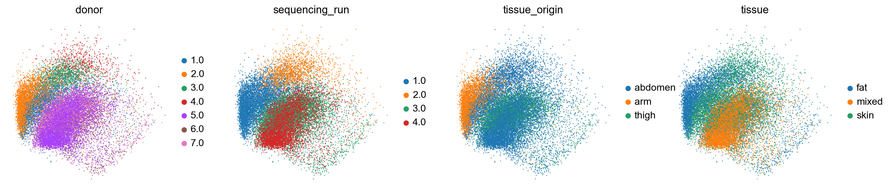
# compute the neighbors graph (using the PCA representation) and the UMAP embedding
sc.pp.neighbors(adata, use_rep="logcounts.scaled.pca", n_pcs=20, n_neighbors=10, key_added="logcounts.scaled.pca.neighbors")
adata.obsm["logcounts.scaled.pca.neighbors.umap"] = sc.tl.umap(adata, neighbors_key="logcounts.scaled.pca.neighbors", copy=True).obsm["X_umap"]
adata/Users/daniele/miniconda3/envs/usefulenv/lib/python3.10/site-packages/umap/distances.py:1063: NumbaDeprecationWarning: The 'nopython' keyword argument was not supplied to the 'numba.jit' decorator. The implicit default value for this argument is currently False, but it will be changed to True in Numba 0.59.0. See https://numba.readthedocs.io/en/stable/reference/deprecation.html#deprecation-of-object-mode-fall-back-behaviour-when-using-jit for details.
@numba.jit()
/Users/daniele/miniconda3/envs/usefulenv/lib/python3.10/site-packages/umap/distances.py:1071: NumbaDeprecationWarning: The 'nopython' keyword argument was not supplied to the 'numba.jit' decorator. The implicit default value for this argument is currently False, but it will be changed to True in Numba 0.59.0. See https://numba.readthedocs.io/en/stable/reference/deprecation.html#deprecation-of-object-mode-fall-back-behaviour-when-using-jit for details.
@numba.jit()
/Users/daniele/miniconda3/envs/usefulenv/lib/python3.10/site-packages/umap/distances.py:1086: NumbaDeprecationWarning: The 'nopython' keyword argument was not supplied to the 'numba.jit' decorator. The implicit default value for this argument is currently False, but it will be changed to True in Numba 0.59.0. See https://numba.readthedocs.io/en/stable/reference/deprecation.html#deprecation-of-object-mode-fall-back-behaviour-when-using-jit for details.
@numba.jit()
/Users/daniele/miniconda3/envs/usefulenv/lib/python3.10/site-packages/umap/umap_.py:660: NumbaDeprecationWarning: The 'nopython' keyword argument was not supplied to the 'numba.jit' decorator. The implicit default value for this argument is currently False, but it will be changed to True in Numba 0.59.0. See https://numba.readthedocs.io/en/stable/reference/deprecation.html#deprecation-of-object-mode-fall-back-behaviour-when-using-jit for details.
@numba.jit()AnnData object with n_obs × n_vars = 21588 × 18627
obs: 'Sample', 'Barcode', 'donor', 'tissue', 'tissue_origin', 'sequencing_run', 'sex', 'n_genes_by_counts', 'log1p_n_genes_by_counts', 'total_counts', 'log1p_total_counts', 'pct_counts_in_top_50_genes', 'pct_counts_in_top_100_genes', 'pct_counts_in_top_200_genes', 'pct_counts_in_top_500_genes'
var: 'ID', 'Symbol', 'Type', 'n_cells_by_counts', 'mean_counts', 'log1p_mean_counts', 'pct_dropout_by_counts', 'total_counts', 'log1p_total_counts'
uns: 'X_name', 'donor_colors', 'sequencing_run_colors', 'tissue_origin_colors', 'tissue_colors', 'logcounts.scaled.pca.neighbors'
obsm: 'logcounts.scaled.pca', 'logcounts.scaled.pca.neighbors.umap'
layers: 'logcounts', 'logcounts.scaled'
obsp: 'logcounts.scaled.pca.neighbors_distances', 'logcounts.scaled.pca.neighbors_connectivities'# UMAP embedding
sc.pl.embedding(adata, basis="logcounts.scaled.pca.neighbors.umap", color=["donor", "sequencing_run", "tissue_origin", "tissue"])/Users/daniele/miniconda3/envs/usefulenv/lib/python3.10/site-packages/scanpy/plotting/_tools/scatterplots.py:392: UserWarning: No data for colormapping provided via 'c'. Parameters 'cmap' will be ignored
cax = scatter(
/Users/daniele/miniconda3/envs/usefulenv/lib/python3.10/site-packages/scanpy/plotting/_tools/scatterplots.py:392: UserWarning: No data for colormapping provided via 'c'. Parameters 'cmap' will be ignored
cax = scatter(
/Users/daniele/miniconda3/envs/usefulenv/lib/python3.10/site-packages/scanpy/plotting/_tools/scatterplots.py:392: UserWarning: No data for colormapping provided via 'c'. Parameters 'cmap' will be ignored
cax = scatter(
/Users/daniele/miniconda3/envs/usefulenv/lib/python3.10/site-packages/scanpy/plotting/_tools/scatterplots.py:392: UserWarning: No data for colormapping provided via 'c'. Parameters 'cmap' will be ignored
cax = scatter(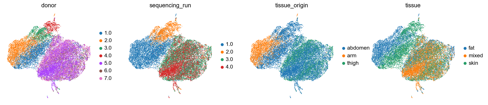
plt.hist(adata.obs.total_counts, bins=100)
plt.xlabel("total count per cell")
plt.show()
plt.hist(adata.obs.log1p_total_counts, bins=100)
plt.xlabel("total log1p-count per cell")
plt.show()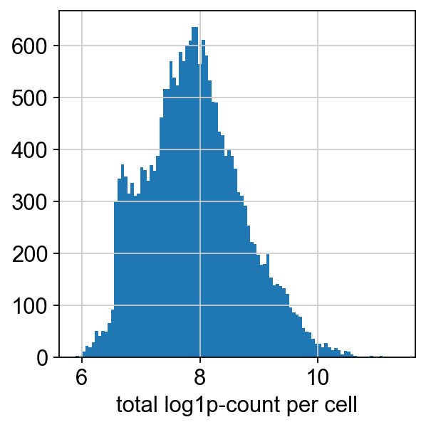
plt.hist(adata.var.total_counts, bins=100)
plt.xlabel("total count per gene")
plt.show()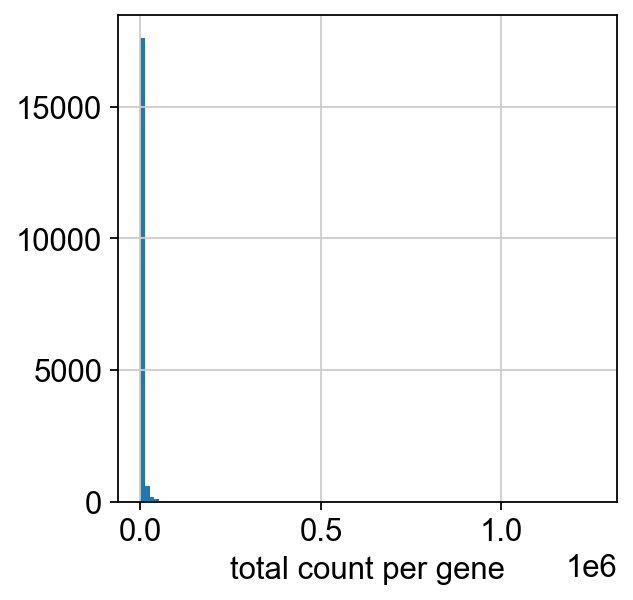
plt.hist(adata.var.log1p_total_counts, bins=100)
plt.xlabel("total log1p-count per gene")
plt.show()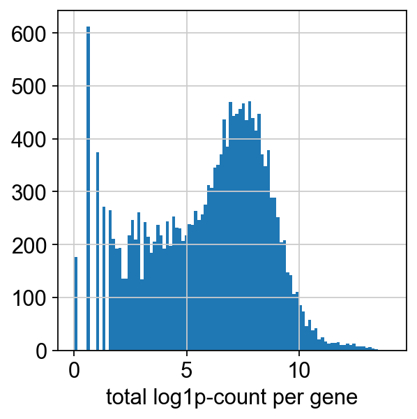
# zero-count cells, zero-count genes
(adata.obs.total_counts==0).sum(), (adata.var.total_counts==0).sum()(0, 177)# select the HVGs using pearson method
pearson_hvgs = sc.experimental.pp.highly_variable_genes(adata, inplace=False, batch_key="donor", layer=None, flavor="pearson_residuals", n_top_genes=500)
pearson_hvgs| means | variances | residual_variances | highly_variable_rank | highly_variable_nbatches | highly_variable_intersection | highly_variable | |
|---|---|---|---|---|---|---|---|
| ENSG00000187634.SAMD11 | 0.000973 | 0.000972 | 0.908626 | NaN | 0 | False | False |
| ENSG00000188976.NOC2L | 0.042709 | 0.049040 | 1.066757 | NaN | 0 | False | False |
| ENSG00000187961.KLHL17 | 0.005420 | 0.006224 | 1.313732 | NaN | 0 | False | False |
| ENSG00000187583.PLEKHN1 | 0.001019 | 0.001018 | 0.832943 | NaN | 0 | False | False |
| ENSG00000187642.PERM1 | 0.000232 | 0.000510 | 0.522404 | NaN | 0 | False | False |
| ... | ... | ... | ... | ... | ... | ... | ... |
| ENSG00000271254.ENSG00000271254 | 0.011349 | 0.013074 | 1.100826 | NaN | 0 | False | False |
| ENSG00000276345.ENSG00000276345 | 0.025246 | 0.029983 | 0.637354 | NaN | 0 | False | False |
| ENSG00000276017.ENSG00000276017 | 0.000046 | 0.000046 | 0.083079 | NaN | 0 | False | False |
| ENSG00000278817.ENSG00000278817 | 0.008894 | 0.009093 | 1.044582 | NaN | 0 | False | False |
| ENSG00000277196.ENSG00000277196 | 0.000139 | 0.000139 | 0.427159 | NaN | 0 | False | False |
18627 rows × 7 columns
plt.figure(figsize=(10,10))
plt.colorbar(plt.scatter(
pearson_hvgs.means, pearson_hvgs.variances,
alpha=.5, s=pearson_hvgs.residual_variances*10, c=np.log1p(pearson_hvgs.residual_variances),
cmap="spring_r"
), label="log(residuals)")
plt.xscale("log")
plt.yscale("log")
plt.xlabel("mean")
plt.ylabel("variance")
plt.show()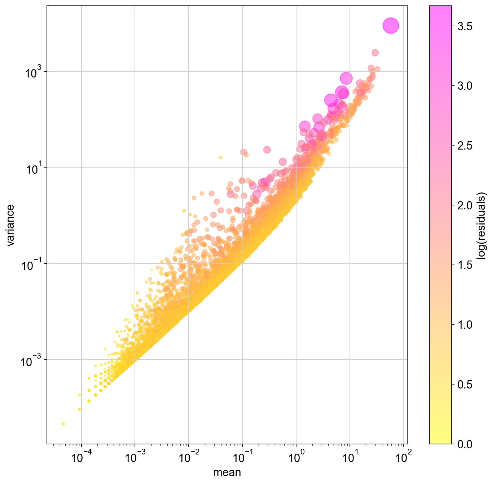
plt.figure(figsize=(10,10))
plt.colorbar(plt.scatter(
pearson_hvgs.means, pearson_hvgs.variances,
alpha=.25, s=pearson_hvgs.residual_variances*10, c=pearson_hvgs.highly_variable_nbatches,
cmap="turbo"
), label="number of batches")
plt.xscale("log")
plt.yscale("log")
plt.xlabel("mean")
plt.ylabel("variance")
plt.show()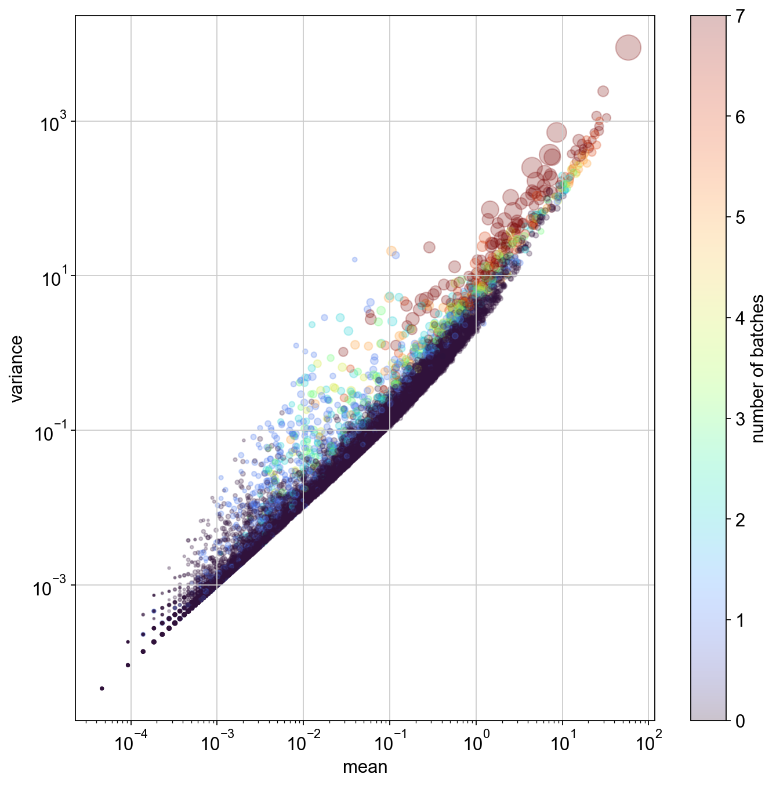
plt.figure(figsize=(10,5))
plt.title("How many genes are highly valiable in at least n batches?")
plt.plot(
np.arange(adata.obs.donor.nunique())+1,
(pearson_hvgs[["highly_variable_nbatches"]].values > np.arange(adata.obs.donor.nunique())[None,:]).sum(axis=0),
linewidth=5
)
plt.ylabel("n genes")
plt.xlabel("n batches")
plt.show()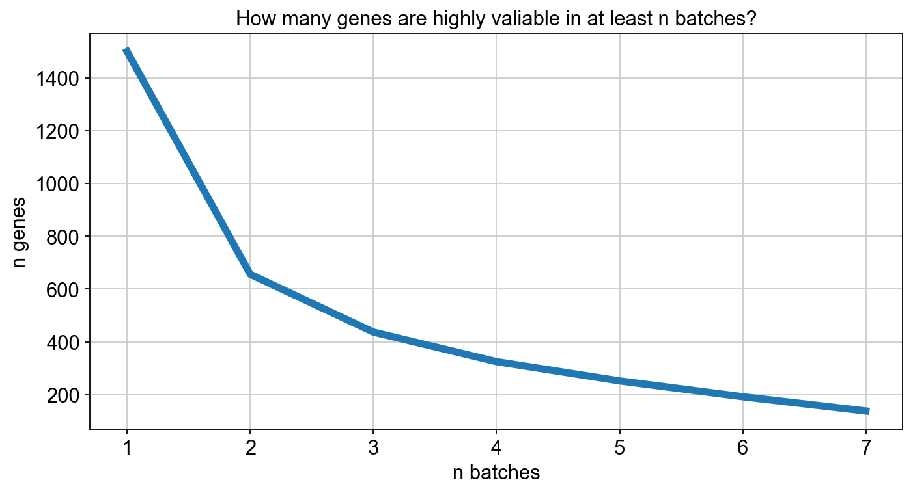
# reading the LECs population and subpopulation markers
markers = pd.read_csv("../markers.csv", header=None)
markers.columns = ["gene_ID", "population", "population_ID", "positive", "known"]
markers = markers.loc[markers.population.str.match(".*LEC.*")]
markers["positive"] = markers.positive=="positive"
markers| gene_ID | population | population_ID | positive | known | |
|---|---|---|---|---|---|
| 0 | ENSG00000117707.PROX1 | LECs | LEC | True | yes |
| 1 | ENSG00000162493.PDPN | LECs | LEC | True | yes |
| 2 | ENSG00000133800.LYVE1 | capillary-LEC | cpLEC | True | yes |
| 3 | ENSG00000137077.CCL21 | capillary-LEC | cpLEC | True | yes |
| 4 | ENSG00000189056.RELN | capillary-LEC | cpLEC | True | yes |
| 5 | ENSG00000129048.ACKR4 | capillary-LEC | cpLEC | False | yes |
| 6 | ENSG00000108691.CCL2 | capillary-LEC | cpLEC | False | no |
| 7 | ENSG00000081041.CXCL2 | capillary-LEC | cpLEC | False | no |
| 8 | ENSG00000133800.LYVE1 | precollector-LEC | pcLEC | True | yes |
| 9 | ENSG00000137077.CCL21 | precollector-LEC | pcLEC | True | yes |
| 10 | ENSG00000189056.RELN | precollector-LEC | pcLEC | True | yes |
| 11 | ENSG00000129048.ACKR4 | precollector-LEC | pcLEC | False | yes |
| 12 | ENSG00000108691.CCL2 | precollector-LEC | pcLEC | True | no |
| 13 | ENSG00000081041.CXCL2 | precollector-LEC | pcLEC | True | no |
| 14 | ENSG00000133800.LYVE1 | collector-LEC | clLEC | False | yes |
| 15 | ENSG00000137077.CCL21 | collector-LEC | clLEC | False | yes |
| 16 | ENSG00000189056.RELN | collector-LEC | clLEC | False | yes |
| 17 | ENSG00000129048.ACKR4 | collector-LEC | clLEC | True | yes |
| 18 | ENSG00000108691.CCL2 | collector-LEC | clLEC | True | no |
| 19 | ENSG00000081041.CXCL2 | collector-LEC | clLEC | True | no |
| 20 | ENSG00000137077.CCL21 | valve-LEC | vLEC | False | yes |
| 21 | ENSG00000133800.LYVE1 | valve-LEC | vLEC | False | yes |
| 22 | ENSG00000013297.CLDN11 | valve-LEC | vLEC | True | yes |
| 23 | ENSG00000272398.CD24 | valve-LEC | vLEC | True | no |
| 24 | ENSG00000149564.ESAM | valve-LEC | vLEC | True | no |
| 25 | ENSG00000170017.ALCAM | valve-LEC | vLEC | True | no |
| 34 | ENSG00000090339.ICAM1 | LECs | LEC | True | ? |
| 35 | ENSG00000103335.PIEZO1 | LECs | LEC | True | ? |
| 36 | ENSG00000154864.PIEZO2 | LECs | LEC | True | ? |
plt.figure(figsize=(10, 5))
plt.subplot(121)
plt.hist(np.log10(adata.var.n_cells_by_counts +1), bins=100, density=True)
plt.xlabel("gene log variance")
plt.ylabel("PDF")
plt.subplot(122)
plt.hist(np.log10(adata.var.n_cells_by_counts +1), bins=100, density=True, cumulative=True)
plt.xlabel("gene log variance")
plt.ylabel("CDF")
plt.show()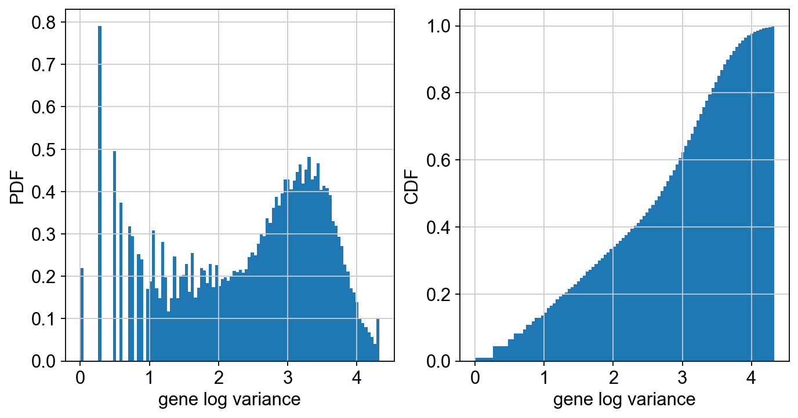
# selecting genes highly variable in at least 2 batches and markers
# (markers are not HVG, but we need them)
selected_hvgs = pearson_hvgs[pearson_hvgs.highly_variable_nbatches>=2].index.union(markers.gene_ID)
selected_hvgsIndex(['ENSG00000003436.TFPI', 'ENSG00000004799.PDK4', 'ENSG00000005483.KMT2E',
'ENSG00000007908.SELE', 'ENSG00000008083.JARID2',
'ENSG00000008294.SPAG9', 'ENSG00000008405.CRY1', 'ENSG00000008517.IL32',
'ENSG00000008988.RPS20', 'ENSG00000009413.REV3L',
...
'ENSG00000244694.PTCHD4', 'ENSG00000257987.TEX49',
'ENSG00000265972.TXNIP', 'ENSG00000266964.FXYD1',
'ENSG00000271503.CCL5', 'ENSG00000272398.CD24', 'ENSG00000276644.DACH1',
'ENSG00000284491.THSD8', 'ENSG00000288602.C8orf44-SGK3',
'ENSG00000291237.SOD2'],
dtype='object', length=675)adata.var["selected"] = adata.var.index.isin(selected_hvgs)
adata.var| ID | Symbol | Type | n_cells_by_counts | mean_counts | log1p_mean_counts | pct_dropout_by_counts | total_counts | log1p_total_counts | selected | |
|---|---|---|---|---|---|---|---|---|---|---|
| ENSG00000187634.SAMD11 | ENSG00000187634 | SAMD11 | Gene Expression | 21 | 0.000973 | 0.000972 | 99.902724 | 21.0 | 3.091042 | False |
| ENSG00000188976.NOC2L | ENSG00000188976 | NOC2L | Gene Expression | 850 | 0.042709 | 0.041822 | 96.062627 | 922.0 | 6.827629 | False |
| ENSG00000187961.KLHL17 | ENSG00000187961 | KLHL17 | Gene Expression | 108 | 0.005420 | 0.005405 | 99.499722 | 117.0 | 4.770685 | False |
| ENSG00000187583.PLEKHN1 | ENSG00000187583 | PLEKHN1 | Gene Expression | 22 | 0.001019 | 0.001019 | 99.898092 | 22.0 | 3.135494 | False |
| ENSG00000187642.PERM1 | ENSG00000187642 | PERM1 | Gene Expression | 3 | 0.000232 | 0.000232 | 99.986103 | 5.0 | 1.791759 | False |
| ... | ... | ... | ... | ... | ... | ... | ... | ... | ... | ... |
| ENSG00000271254.ENSG00000271254 | ENSG00000271254 | ENSG00000271254 | Gene Expression | 226 | 0.011349 | 0.011285 | 98.953122 | 245.0 | 5.505332 | False |
| ENSG00000276345.ENSG00000276345 | ENSG00000276345 | ENSG00000276345 | Gene Expression | 491 | 0.025246 | 0.024932 | 97.725588 | 545.0 | 6.302619 | False |
| ENSG00000276017.ENSG00000276017 | ENSG00000276017 | ENSG00000276017 | Gene Expression | 1 | 0.000046 | 0.000046 | 99.995368 | 1.0 | 0.693147 | False |
| ENSG00000278817.ENSG00000278817 | ENSG00000278817 | ENSG00000278817 | Gene Expression | 189 | 0.008894 | 0.008855 | 99.124514 | 192.0 | 5.262690 | False |
| ENSG00000277196.ENSG00000277196 | ENSG00000277196 | ENSG00000277196 | Gene Expression | 3 | 0.000139 | 0.000139 | 99.986103 | 3.0 | 1.386294 | False |
18627 rows × 10 columns
# now working just on the HVGs
adata_hvgs = adata[:,adata.var.selected].copy()
sc.pp.calculate_qc_metrics(adata_hvgs, inplace=True)
adata_hvgsAnnData object with n_obs × n_vars = 21588 × 661
obs: 'Sample', 'Barcode', 'donor', 'tissue', 'tissue_origin', 'sequencing_run', 'sex', 'n_genes_by_counts', 'log1p_n_genes_by_counts', 'total_counts', 'log1p_total_counts', 'pct_counts_in_top_50_genes', 'pct_counts_in_top_100_genes', 'pct_counts_in_top_200_genes', 'pct_counts_in_top_500_genes'
var: 'ID', 'Symbol', 'Type', 'n_cells_by_counts', 'mean_counts', 'log1p_mean_counts', 'pct_dropout_by_counts', 'total_counts', 'log1p_total_counts', 'selected'
uns: 'X_name', 'donor_colors', 'sequencing_run_colors', 'tissue_origin_colors', 'tissue_colors', 'logcounts.scaled.pca.neighbors'
obsm: 'logcounts.scaled.pca', 'logcounts.scaled.pca.neighbors.umap'
layers: 'logcounts', 'logcounts.scaled'
obsp: 'logcounts.scaled.pca.neighbors_distances', 'logcounts.scaled.pca.neighbors_connectivities'sc.pl.violin(adata_hvgs, ['n_genes_by_counts', 'total_counts'], jitter=0.4, multi_panel=True, log=True)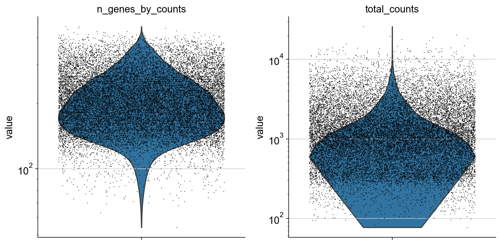
plt.figure(figsize=(10, 5))
plt.subplot(121)
plt.hist(np.log10(adata_hvgs.var.n_cells_by_counts), bins=100, density=True)
plt.xlabel("gene log variance")
plt.ylabel("PDF")
plt.subplot(122)
plt.hist(np.log10(adata_hvgs.var.n_cells_by_counts), bins=100, density=True, cumulative=True)
plt.xlabel("gene log variance")
plt.ylabel("CDF")
plt.show()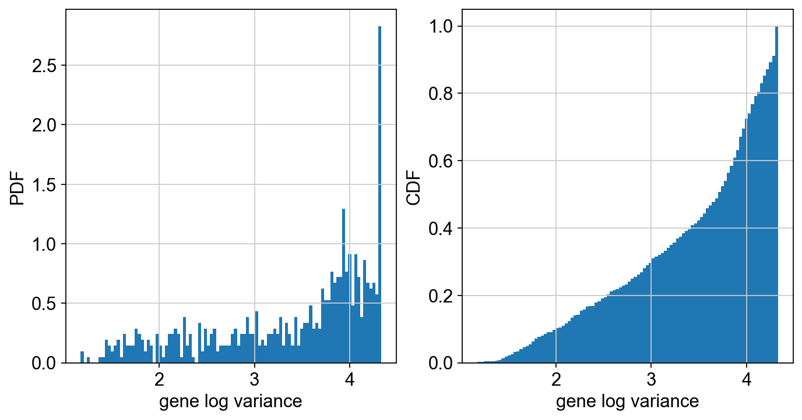
# HVGs PCA explained variance
pca = PCA(svd_solver="full").fit(adata_hvgs.layers["logcounts.scaled"])
plt.plot(np.cumsum(pca.explained_variance_ratio_))
plt.show()
plt.plot(pca.explained_variance_ratio_)
plt.show()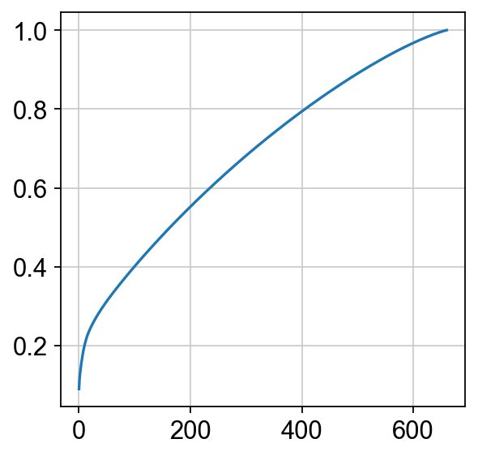
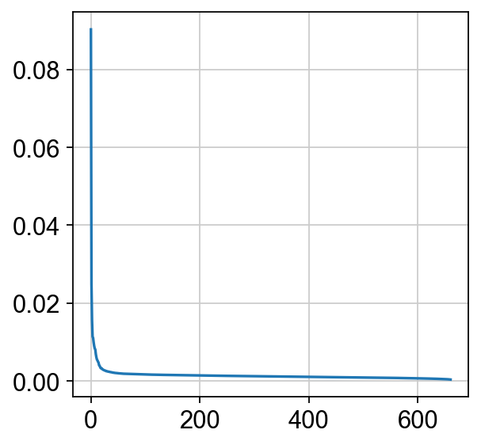
plt.plot(pca.explained_variance_ratio_[:50])
# recompute PCA, neighbors and UMAP just on HVGs
adata_hvgs.obsm["logcounts.scaled.pca"] = sc.pp.pca(adata_hvgs.layers["logcounts.scaled"], svd_solver="arpack", n_comps=100)
sc.pp.neighbors(adata_hvgs, use_rep="logcounts.scaled.pca", n_pcs=100, n_neighbors=25, key_added="logcounts.scaled.pca.neighbors")
adata_hvgs.obsm["logcounts.scaled.pca.neighbors.umap"] = sc.tl.umap(adata_hvgs, neighbors_key="logcounts.scaled.pca.neighbors", copy=True).obsm["X_umap"]
adata_hvgsAnnData object with n_obs × n_vars = 21588 × 661
obs: 'Sample', 'Barcode', 'donor', 'tissue', 'tissue_origin', 'sequencing_run', 'sex', 'n_genes_by_counts', 'log1p_n_genes_by_counts', 'total_counts', 'log1p_total_counts', 'pct_counts_in_top_50_genes', 'pct_counts_in_top_100_genes', 'pct_counts_in_top_200_genes', 'pct_counts_in_top_500_genes'
var: 'ID', 'Symbol', 'Type', 'n_cells_by_counts', 'mean_counts', 'log1p_mean_counts', 'pct_dropout_by_counts', 'total_counts', 'log1p_total_counts', 'selected'
uns: 'X_name', 'donor_colors', 'sequencing_run_colors', 'tissue_origin_colors', 'tissue_colors', 'logcounts.scaled.pca.neighbors'
obsm: 'logcounts.scaled.pca', 'logcounts.scaled.pca.neighbors.umap'
layers: 'logcounts', 'logcounts.scaled'
obsp: 'logcounts.scaled.pca.neighbors_distances', 'logcounts.scaled.pca.neighbors_connectivities'# 2 PCs
sc.pl.embedding(adata_hvgs, basis="logcounts.scaled.pca", color=["donor", "sequencing_run", "tissue_origin", "tissue"])/Users/daniele/miniconda3/envs/usefulenv/lib/python3.10/site-packages/scanpy/plotting/_tools/scatterplots.py:392: UserWarning: No data for colormapping provided via 'c'. Parameters 'cmap' will be ignored
cax = scatter(
/Users/daniele/miniconda3/envs/usefulenv/lib/python3.10/site-packages/scanpy/plotting/_tools/scatterplots.py:392: UserWarning: No data for colormapping provided via 'c'. Parameters 'cmap' will be ignored
cax = scatter(
/Users/daniele/miniconda3/envs/usefulenv/lib/python3.10/site-packages/scanpy/plotting/_tools/scatterplots.py:392: UserWarning: No data for colormapping provided via 'c'. Parameters 'cmap' will be ignored
cax = scatter(
/Users/daniele/miniconda3/envs/usefulenv/lib/python3.10/site-packages/scanpy/plotting/_tools/scatterplots.py:392: UserWarning: No data for colormapping provided via 'c'. Parameters 'cmap' will be ignored
cax = scatter(# UMAP
sc.pl.embedding(adata_hvgs, basis="logcounts.scaled.pca.neighbors.umap", color=["donor", "sequencing_run", "tissue_origin", "tissue"])/Users/daniele/miniconda3/envs/usefulenv/lib/python3.10/site-packages/scanpy/plotting/_tools/scatterplots.py:392: UserWarning: No data for colormapping provided via 'c'. Parameters 'cmap' will be ignored
cax = scatter(
/Users/daniele/miniconda3/envs/usefulenv/lib/python3.10/site-packages/scanpy/plotting/_tools/scatterplots.py:392: UserWarning: No data for colormapping provided via 'c'. Parameters 'cmap' will be ignored
cax = scatter(
/Users/daniele/miniconda3/envs/usefulenv/lib/python3.10/site-packages/scanpy/plotting/_tools/scatterplots.py:392: UserWarning: No data for colormapping provided via 'c'. Parameters 'cmap' will be ignored
cax = scatter(
/Users/daniele/miniconda3/envs/usefulenv/lib/python3.10/site-packages/scanpy/plotting/_tools/scatterplots.py:392: UserWarning: No data for colormapping provided via 'c'. Parameters 'cmap' will be ignored
cax = scatter(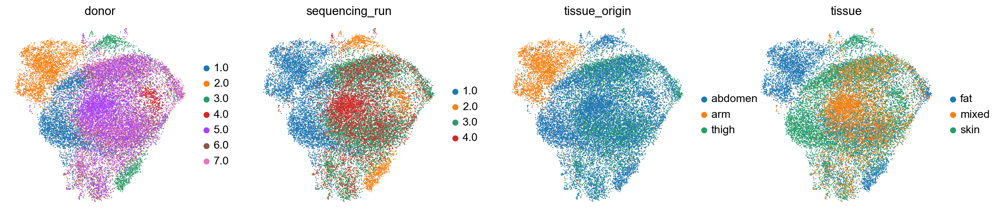
# scanorama intergation
_out_scanorama = scanorama.correct(
[adata_hvgs[adata_hvgs.obs.donor==donor].copy().layers["logcounts.scaled"] for donor in adata_hvgs.obs.donor.unique()],
genes_list = [adata_hvgs.var.index.to_list()]*adata_hvgs.obs.donor.nunique(),
return_dimred=True, knn=40, sigma=20 # hyperparameters: knn, sigma
)
_out_scanoramaFound 661 genes among all datasets
[[0. 0.81853973 0.66376582 0.67298578 0.57528642 0.32293252
0.25418569]
[0. 0. 0.80300633 0.28909953 0.24194703 0.43450251
0.26986399]
[0. 0. 0. 0.63507109 0.65743671 0.8568038
0.56566456]
[0. 0. 0. 0. 0.78515008 0.72511848
0.56398104]
[0. 0. 0. 0. 0. 0.84260775
0.90507365]
[0. 0. 0. 0. 0. 0.
0.94057875]
[0. 0. 0. 0. 0. 0.
0. ]]
Processing datasets (5, 6)
Processing datasets (4, 6)
Processing datasets (2, 5)
Processing datasets (4, 5)
Processing datasets (0, 1)
Processing datasets (1, 2)
Processing datasets (3, 4)
Processing datasets (3, 5)
Processing datasets (0, 3)
Processing datasets (0, 2)
Processing datasets (2, 4)
Processing datasets (2, 3)
Processing datasets (0, 4)
Processing datasets (2, 6)
Processing datasets (3, 6)
Processing datasets (1, 5)
Processing datasets (0, 5)
Processing datasets (1, 3)
Processing datasets (1, 6)
Processing datasets (0, 6)
Processing datasets (1, 4)([array([[ 0.15499599, 0.06518975, -0.01299546, ..., 0.02788879,
-0.03987133, -0.00690037],
[-0.29755602, 0.19157411, 0.13257315, ..., 0.0442807 ,
-0.00492444, -0.01317647],
[-0.22754984, 0.0381117 , 0.05283327, ..., -0.00977411,
0.0061749 , 0.01003503],
...,
[ 0.14433898, 0.2337615 , -0.00384419, ..., 0.11232922,
0.00169593, 0.0090357 ],
[-0.24651929, -0.01847732, -0.00705104, ..., -0.03045652,
0.00324885, 0.04252008],
[-0.01052221, 0.0394253 , -0.01300106, ..., -0.03162768,
0.01625904, -0.01664504]]),
array([[-0.06234173, -0.06557873, 0.04186698, ..., 0.04546896,
0.04436917, -0.00609741],
[-0.2686676 , 0.0521724 , 0.06564512, ..., -0.02829906,
0.00054603, 0.01064134],
[-0.09798006, 0.11487086, 0.02689218, ..., 0.0173614 ,
-0.06372137, -0.01508645],
...,
[-0.15823784, -0.14843606, 0.01756423, ..., -0.01177048,
0.00510066, 0.02638219],
[-0.32701807, 0.12204812, 0.07459577, ..., -0.01325339,
-0.00540898, 0.00482282],
[-0.28177148, -0.03915433, 0.06508979, ..., -0.02300479,
0.01643855, -0.01600262]]),
array([[ 0.15855013, 0.00203635, 0.19450258, ..., 0.01839163,
-0.01763088, 0.0244716 ],
[-0.1931036 , -0.03984173, 0.08583574, ..., -0.00956667,
-0.00171763, 0.04041452],
[-0.07287734, -0.17525359, -0.0844985 , ..., 0.00575027,
0.01310534, 0.0294322 ],
...,
[-0.11932868, 0.07481472, 0.09818116, ..., 0.02770809,
0.00372633, -0.00687399],
[ 0.09159832, 0.17031501, -0.18619418, ..., 0.04626286,
-0.01744314, 0.07969091],
[ 0.51540154, 0.18906866, 0.07322843, ..., 0.01877629,
-0.00865021, 0.02807046]]),
array([[ 0.35435499, 0.18952807, 0.0521938 , ..., 0.02130831,
-0.003861 , -0.00726706],
[ 0.05861867, -0.20627038, 0.01610541, ..., 0.02774822,
-0.0147005 , 0.02692575],
[ 0.30071941, -0.03627409, 0.09865203, ..., 0.03162814,
0.02063437, -0.01746373],
...,
[ 0.06761111, 0.03725269, 0.042627 , ..., 0.02982114,
-0.02569161, -0.01255272],
[ 0.14553303, 0.16727045, -0.12152161, ..., 0.00094646,
0.02357648, 0.01319848],
[-0.11781027, 0.03118317, -0.03845329, ..., -0.02707633,
-0.04831128, 0.03119572]]),
array([[ 0.09529602, -0.04811884, -0.01376854, ..., -0.05904311,
-0.0358609 , -0.02399296],
[ 0.08800763, 0.18083561, -0.05354871, ..., -0.00443724,
-0.04889987, 0.00621034],
[-0.00214632, -0.15293116, 0.00732098, ..., -0.0110359 ,
-0.00411143, -0.01476358],
...,
[ 0.33108737, 0.24439312, 0.15594851, ..., -0.03048401,
-0.01337788, 0.03782634],
[ 0.05147973, 0.05133062, -0.02328434, ..., 0.0155306 ,
0.04861371, -0.01319355],
[ 0.08537502, -0.12033448, -0.05204537, ..., -0.02703678,
-0.06020824, 0.02002191]]),
array([[-0.15713895, 0.1629033 , 0.02856795, ..., -0.00108895,
0.00348774, -0.02131382],
[ 0.51057405, 0.07136083, 0.20390466, ..., 0.01064401,
-0.00794195, -0.00721427],
[ 0.1781464 , -0.05422093, -0.02037077, ..., 0.03953636,
-0.0009756 , 0.03721557],
...,
[ 0.02867076, 0.18376819, -0.17998279, ..., 0.01210207,
0.02445995, -0.03547943],
[-0.03821302, 0.18921294, -0.11779424, ..., -0.06068977,
0.0230536 , -0.01822293],
[ 0.10820627, -0.09501749, -0.02832867, ..., 0.03718959,
-0.00985695, -0.00255919]]),
array([[ 0.35163479, -0.09545828, -0.03182212, ..., 0.03719322,
-0.07762674, -0.01355305],
[ 0.04723867, -0.08516124, 0.00125534, ..., -0.00996006,
-0.01649926, 0.0217293 ],
[ 0.16606219, 0.14966646, -0.18417494, ..., -0.00180196,
-0.03255265, -0.01700102],
...,
[ 0.44644608, 0.21265846, -0.01797266, ..., 0.03048696,
-0.01499321, 0.00058349],
[-0.27040636, 0.11308834, 0.17384138, ..., -0.07102673,
-0.0418337 , -0.00358643],
[ 0.0762948 , -0.06536989, 0.17216896, ..., 0.06715966,
-0.05500113, -0.01419761]])],
[<3942x661 sparse matrix of type '<class 'numpy.float64'>'
with 2605662 stored elements in Compressed Sparse Row format>,
<2794x661 sparse matrix of type '<class 'numpy.float64'>'
with 1846834 stored elements in Compressed Sparse Row format>,
<1264x661 sparse matrix of type '<class 'numpy.float64'>'
with 835504 stored elements in Compressed Sparse Row format>,
<633x661 sparse matrix of type '<class 'numpy.float64'>'
with 418413 stored elements in Compressed Sparse Row format>,
<3666x661 sparse matrix of type '<class 'numpy.float64'>'
with 2423226 stored elements in Compressed Sparse Row format>,
<4527x661 sparse matrix of type '<class 'numpy.float64'>'
with 2992347 stored elements in Compressed Sparse Row format>,
<4762x661 sparse matrix of type '<class 'numpy.float64'>'
with 3147682 stored elements in Compressed Sparse Row format>],
array(['ENSG00000003436.TFPI', 'ENSG00000004799.PDK4',
'ENSG00000005483.KMT2E', 'ENSG00000007908.SELE',
'ENSG00000008083.JARID2', 'ENSG00000008294.SPAG9',
'ENSG00000008405.CRY1', 'ENSG00000008517.IL32',
'ENSG00000008988.RPS20', 'ENSG00000009413.REV3L',
'ENSG00000010278.CD9', 'ENSG00000010803.SCMH1',
'ENSG00000010818.HIVEP2', 'ENSG00000011114.BTBD7',
'ENSG00000011465.DCN', 'ENSG00000011600.TYROBP',
'ENSG00000013297.CLDN11', 'ENSG00000017427.IGF1',
'ENSG00000018408.WWTR1', 'ENSG00000019582.CD74',
'ENSG00000019991.HGF', 'ENSG00000020577.SAMD4A',
'ENSG00000021355.SERPINB1', 'ENSG00000021645.NRXN3',
'ENSG00000023445.BIRC3', 'ENSG00000026025.VIM',
'ENSG00000026508.CD44', 'ENSG00000033867.SLC4A7',
'ENSG00000034510.TMSB10', 'ENSG00000038295.TLL1',
'ENSG00000038382.TRIO', 'ENSG00000038945.MSR1',
'ENSG00000041982.TNC', 'ENSG00000043462.LCP2',
'ENSG00000047617.ANO2', 'ENSG00000048740.CELF2',
'ENSG00000049192.ADAMTS6', 'ENSG00000058085.LAMC2',
'ENSG00000059758.CDK17', 'ENSG00000059804.SLC2A3',
'ENSG00000060140.STYK1', 'ENSG00000063177.RPL18',
'ENSG00000064651.SLC12A2', 'ENSG00000064989.CALCRL',
'ENSG00000067082.KLF6', 'ENSG00000067113.PLPP1',
'ENSG00000067141.NEO1', 'ENSG00000067715.SYT1',
'ENSG00000067798.NAV3', 'ENSG00000069667.RORA',
'ENSG00000071205.ARHGAP10', 'ENSG00000073756.PTGS2',
'ENSG00000073921.PICALM', 'ENSG00000074181.NOTCH3',
'ENSG00000074527.NTN4', 'ENSG00000075213.SEMA3A',
'ENSG00000075391.RASAL2', 'ENSG00000075420.FNDC3B',
'ENSG00000075624.ACTB', 'ENSG00000076706.MCAM',
'ENSG00000077522.ACTN2', 'ENSG00000077942.FBLN1',
'ENSG00000078269.SYNJ2', 'ENSG00000078401.EDN1',
'ENSG00000080824.HSP90AA1', 'ENSG00000081041.CXCL2',
'ENSG00000084112.SSH1', 'ENSG00000085276.MECOM',
'ENSG00000086061.DNAJA1', 'ENSG00000086619.ERO1B',
'ENSG00000087086.FTL', 'ENSG00000089009.RPL6',
'ENSG00000090104.RGS1', 'ENSG00000090339.ICAM1',
'ENSG00000090905.TNRC6A', 'ENSG00000091879.ANGPT2',
'ENSG00000091986.CCDC80', 'ENSG00000092841.MYL6',
'ENSG00000092969.TGFB2', 'ENSG00000095637.SORBS1',
'ENSG00000095951.HIVEP1', 'ENSG00000096384.HSP90AB1',
'ENSG00000099250.NRP1', 'ENSG00000099260.PALMD',
'ENSG00000099860.GADD45B', 'ENSG00000100097.LGALS1',
'ENSG00000100191.SLC5A4', 'ENSG00000100234.TIMP3',
'ENSG00000100292.HMOX1', 'ENSG00000100311.PDGFB',
'ENSG00000100906.NFKBIA', 'ENSG00000101004.NINL',
'ENSG00000101096.NFATC2', 'ENSG00000101335.MYL9',
'ENSG00000101439.CST3', 'ENSG00000102003.SYP',
'ENSG00000102053.ZC3H12B', 'ENSG00000102265.TIMP1',
'ENSG00000102271.KLHL4', 'ENSG00000102547.CAB39L',
'ENSG00000102755.FLT1', 'ENSG00000102760.RGCC',
'ENSG00000102786.INTS6', 'ENSG00000102908.NFAT5',
'ENSG00000103196.CRISPLD2', 'ENSG00000103335.PIEZO1',
'ENSG00000104112.SCG3', 'ENSG00000104368.PLAT',
'ENSG00000105372.RPS19', 'ENSG00000105640.RPL18A',
'ENSG00000105697.HAMP', 'ENSG00000105810.CDK6',
'ENSG00000105835.NAMPT', 'ENSG00000105889.STEAP1B',
'ENSG00000105974.CAV1', 'ENSG00000106211.HSPB1',
'ENSG00000106305.AIMP2', 'ENSG00000106366.SERPINE1',
'ENSG00000106511.MEOX2', 'ENSG00000106665.CLIP2',
'ENSG00000107249.GLIS3', 'ENSG00000107317.PTGDS',
'ENSG00000107562.CXCL12', 'ENSG00000107796.ACTA2',
'ENSG00000108107.RPL28', 'ENSG00000108298.RPL19',
'ENSG00000108342.CSF3', 'ENSG00000108691.CCL2',
'ENSG00000109320.NFKB1', 'ENSG00000109321.AREG',
'ENSG00000109436.TBC1D9', 'ENSG00000109475.RPL34',
'ENSG00000109756.RAPGEF2', 'ENSG00000109846.CRYAB',
'ENSG00000110492.MDK', 'ENSG00000110700.RPS13',
'ENSG00000110841.PPFIBP1', 'ENSG00000110848.CD69',
'ENSG00000110852.CLEC2B', 'ENSG00000111057.KRT18',
'ENSG00000111341.MGP', 'ENSG00000111404.RERGL',
'ENSG00000111640.GAPDH', 'ENSG00000111885.MAN1A1',
'ENSG00000111962.UST', 'ENSG00000112306.RPS12',
'ENSG00000112531.QKI', 'ENSG00000112851.ERBIN',
'ENSG00000113273.ARSB', 'ENSG00000113448.PDE4D',
'ENSG00000113810.SMC4', 'ENSG00000114315.HES1',
'ENSG00000114423.CBLB', 'ENSG00000114480.GBE1',
'ENSG00000115252.PDE1A', 'ENSG00000115268.RPS15',
'ENSG00000115380.EFEMP1', 'ENSG00000115414.FN1',
'ENSG00000115419.GLS', 'ENSG00000115457.IGFBP2',
'ENSG00000115461.IGFBP5', 'ENSG00000115738.ID2',
'ENSG00000115758.ODC1', 'ENSG00000115963.RND3',
'ENSG00000116117.PARD3B', 'ENSG00000116132.PRRX1',
'ENSG00000116741.RGS2', 'ENSG00000117318.ID3',
'ENSG00000117461.PIK3R3', 'ENSG00000117707.PROX1',
'ENSG00000117724.CENPF', 'ENSG00000118217.ATF6',
'ENSG00000118473.SGIP1', 'ENSG00000118503.TNFAIP3',
'ENSG00000118515.SGK1', 'ENSG00000118523.CCN2',
'ENSG00000118596.SLC16A7', 'ENSG00000118689.FOXO3',
'ENSG00000118985.ELL2', 'ENSG00000119771.KLHL29',
'ENSG00000120129.DUSP1', 'ENSG00000120278.PLEKHG1',
'ENSG00000120594.PLXDC2', 'ENSG00000120658.ENOX1',
'ENSG00000120694.HSPH1', 'ENSG00000120738.EGR1',
'ENSG00000120885.CLU', 'ENSG00000121101.TEX14',
'ENSG00000121966.CXCR4', 'ENSG00000122026.RPL21',
'ENSG00000122254.HS3ST2', 'ENSG00000122591.FAM126A',
'ENSG00000122644.ARL4A', 'ENSG00000122691.TWIST1',
'ENSG00000122862.SRGN', 'ENSG00000123358.NR4A1',
'ENSG00000123416.TUBA1B', 'ENSG00000123610.TNFAIP6',
'ENSG00000123689.G0S2', 'ENSG00000123700.KCNJ2',
'ENSG00000124172.ATP5F1E', 'ENSG00000124762.CDKN1A',
'ENSG00000124766.SOX4', 'ENSG00000124935.SCGB1D2',
'ENSG00000125148.MT2A', 'ENSG00000125257.ABCC4',
'ENSG00000125347.IRF1', 'ENSG00000125691.RPL23',
'ENSG00000125730.C3', 'ENSG00000125740.FOSB',
'ENSG00000125868.DSTN', 'ENSG00000125968.ID1',
'ENSG00000126583.PRKCG', 'ENSG00000126709.IFI6',
'ENSG00000126785.RHOJ', 'ENSG00000127528.KLF2',
'ENSG00000127920.GNG11', 'ENSG00000127951.FGL2',
'ENSG00000127954.STEAP4', 'ENSG00000128016.ZFP36',
'ENSG00000128573.FOXP2', 'ENSG00000129048.ACKR4',
'ENSG00000129538.RNASE1', 'ENSG00000129682.FGF13',
'ENSG00000130066.SAT1', 'ENSG00000130203.APOE',
'ENSG00000130255.RPL36', 'ENSG00000130300.PLVAP',
'ENSG00000130303.BST2', 'ENSG00000130304.SLC27A1',
'ENSG00000130449.ZSWIM6', 'ENSG00000130513.GDF15',
'ENSG00000130522.JUND', 'ENSG00000131016.AKAP12',
'ENSG00000131018.SYNE1', 'ENSG00000131477.RAMP2',
'ENSG00000132002.DNAJB1', 'ENSG00000132003.ZSWIM4',
'ENSG00000132386.SERPINF1', 'ENSG00000132466.ANKRD17',
'ENSG00000132475.H3-3B', 'ENSG00000132965.ALOX5AP',
'ENSG00000133065.SLC41A1', 'ENSG00000133110.POSTN',
'ENSG00000133112.TPT1', 'ENSG00000133316.WDR74',
'ENSG00000133392.MYH11', 'ENSG00000133454.MYO18B',
'ENSG00000133636.NTS', 'ENSG00000133687.TMTC1',
'ENSG00000133800.LYVE1', 'ENSG00000133805.AMPD3',
'ENSG00000133962.CATSPERB', 'ENSG00000134215.VAV3',
'ENSG00000134245.WNT2B', 'ENSG00000134294.SLC38A2',
'ENSG00000134363.FST', 'ENSG00000134419.RPS15A',
'ENSG00000134443.GRP', 'ENSG00000134531.EMP1',
'ENSG00000134532.SOX5', 'ENSG00000134533.RERG',
'ENSG00000134539.KLRD1', 'ENSG00000135046.ANXA1',
'ENSG00000135048.CEMIP2', 'ENSG00000135218.CD36',
'ENSG00000135346.CGA', 'ENSG00000135480.KRT7',
'ENSG00000135540.NHSL1', 'ENSG00000135828.RNASEL',
'ENSG00000135862.LAMC1', 'ENSG00000135905.DOCK10',
'ENSG00000136011.STAB2', 'ENSG00000136156.ITM2B',
'ENSG00000136244.IL6', 'ENSG00000136810.TXN',
'ENSG00000136826.KLF4', 'ENSG00000136997.MYC',
'ENSG00000137075.RNF38', 'ENSG00000137077.CCL21',
'ENSG00000137154.RPS6', 'ENSG00000137331.IER3',
'ENSG00000137801.THBS1', 'ENSG00000137818.RPLP1',
'ENSG00000138081.FBXO11', 'ENSG00000138135.CH25H',
'ENSG00000138326.RPS24', 'ENSG00000138378.STAT4',
'ENSG00000138411.HECW2', 'ENSG00000138448.ITGAV',
'ENSG00000138639.ARHGAP24', 'ENSG00000138722.MMRN1',
'ENSG00000138780.GSTCD', 'ENSG00000138795.LEF1',
'ENSG00000139144.PIK3C2G', 'ENSG00000139160.ETFBKMT',
'ENSG00000139318.DUSP6', 'ENSG00000139329.LUM',
'ENSG00000139946.PELI2', 'ENSG00000140945.CDH13',
'ENSG00000140988.RPS2', 'ENSG00000141506.PIK3R5',
'ENSG00000142089.IFITM3', 'ENSG00000142207.URB1',
'ENSG00000142599.RERE', 'ENSG00000142676.RPL11',
'ENSG00000142871.CCN1', 'ENSG00000142937.RPS8',
'ENSG00000143196.DPT', 'ENSG00000143248.RGS5',
'ENSG00000143333.RGS16', 'ENSG00000143341.HMCN1',
'ENSG00000143947.RPS27A', 'ENSG00000144278.GALNT13',
'ENSG00000144476.ACKR3', 'ENSG00000144619.CNTN4',
'ENSG00000144642.RBMS3', 'ENSG00000144668.ITGA9',
'ENSG00000144713.RPL32', 'ENSG00000144724.PTPRG',
'ENSG00000144824.PHLDB2', 'ENSG00000145147.SLIT2',
'ENSG00000145425.RPS3A', 'ENSG00000145569.OTULINL',
'ENSG00000145592.RPL37', 'ENSG00000145687.SSBP2',
'ENSG00000145819.ARHGAP26', 'ENSG00000145824.CXCL14',
'ENSG00000146426.TIAM2', 'ENSG00000146592.CREB5',
'ENSG00000146648.EGFR', 'ENSG00000147403.RPL10',
'ENSG00000147459.DOCK5', 'ENSG00000148053.NTRK2',
'ENSG00000148498.PARD3', 'ENSG00000148516.ZEB1',
'ENSG00000148655.LRMDA', 'ENSG00000148671.ADIRF',
'ENSG00000148773.MKI67', 'ENSG00000148926.ADM',
'ENSG00000149100.EIF3M', 'ENSG00000149273.RPS3',
'ENSG00000149564.ESAM', 'ENSG00000149591.TAGLN',
'ENSG00000149806.FAU', 'ENSG00000150054.MPP7',
'ENSG00000150625.GPM6A', 'ENSG00000150672.DLG2',
'ENSG00000150907.FOXO1', 'ENSG00000150991.UBC',
'ENSG00000151276.MAGI1', 'ENSG00000151322.NPAS3',
'ENSG00000151468.CCDC3', 'ENSG00000151491.EPS8',
'ENSG00000151632.AKR1C2', 'ENSG00000151746.BICD1',
'ENSG00000151789.ZNF385D', 'ENSG00000151914.DST',
'ENSG00000152413.HOMER1', 'ENSG00000152518.ZFP36L2',
'ENSG00000152583.SPARCL1', 'ENSG00000152601.MBNL1',
'ENSG00000152818.UTRN', 'ENSG00000152894.PTPRK',
'ENSG00000152953.STK32B', 'ENSG00000153283.CD96',
'ENSG00000153317.ASAP1', 'ENSG00000153721.CNKSR3',
'ENSG00000153993.SEMA3D', 'ENSG00000154122.ANKH',
'ENSG00000154217.PITPNC1', 'ENSG00000154330.PGM5',
'ENSG00000154556.SORBS2', 'ENSG00000154645.CHODL',
'ENSG00000154734.ADAMTS1', 'ENSG00000154736.ADAMTS5',
'ENSG00000154864.PIEZO2', 'ENSG00000155657.TTN',
'ENSG00000155849.ELMO1', 'ENSG00000155886.SLC24A2',
'ENSG00000156049.GNA14', 'ENSG00000156140.ADAMTS3',
'ENSG00000156482.RPL30', 'ENSG00000156508.EEF1A1',
'ENSG00000156639.ZFAND3', 'ENSG00000157168.NRG1',
'ENSG00000157483.MYO1E', 'ENSG00000157540.DYRK1A',
'ENSG00000157654.PALM2AKAP2', 'ENSG00000157764.BRAF',
'ENSG00000157827.FMNL2', 'ENSG00000158050.DUSP2',
'ENSG00000158321.AUTS2', 'ENSG00000158859.ADAMTS4',
'ENSG00000158869.FCER1G', 'ENSG00000159167.STC1',
'ENSG00000159200.RCAN1', 'ENSG00000159713.TPPP3',
'ENSG00000160145.KALRN', 'ENSG00000160180.TFF3',
'ENSG00000160584.SIK3', 'ENSG00000160789.LMNA',
'ENSG00000160888.IER2', 'ENSG00000161011.SQSTM1',
'ENSG00000161016.RPL8', 'ENSG00000161970.RPL26',
'ENSG00000162244.RPL29', 'ENSG00000162267.ITIH3',
'ENSG00000162493.PDPN', 'ENSG00000162510.MATN1',
'ENSG00000162618.ADGRL4', 'ENSG00000162687.KCNT2',
'ENSG00000162772.ATF3', 'ENSG00000163191.S100A11',
'ENSG00000163273.NPPC', 'ENSG00000163359.COL6A3',
'ENSG00000163453.IGFBP7', 'ENSG00000163492.CCDC141',
'ENSG00000163638.ADAMTS9', 'ENSG00000163661.PTX3',
'ENSG00000163682.RPL9', 'ENSG00000163687.DNASE1L3',
'ENSG00000163734.CXCL3', 'ENSG00000163739.CXCL1',
'ENSG00000163815.CLEC3B', 'ENSG00000163964.PIGX',
'ENSG00000164032.H2AZ1', 'ENSG00000164056.SPRY1',
'ENSG00000164116.GUCY1A1', 'ENSG00000164176.EDIL3',
'ENSG00000164442.CITED2', 'ENSG00000164512.ANKRD55',
'ENSG00000164587.RPS14', 'ENSG00000164687.FABP5',
'ENSG00000164692.COL1A2', 'ENSG00000164736.SOX17',
'ENSG00000164949.GEM', 'ENSG00000165124.SVEP1',
'ENSG00000165309.ARMC3', 'ENSG00000165379.LRFN5',
'ENSG00000165507.DEPP1', 'ENSG00000165714.BORCS5',
'ENSG00000165810.BTNL9', 'ENSG00000165949.IFI27',
'ENSG00000166105.GLB1L3', 'ENSG00000166441.RPL27A',
'ENSG00000166482.MFAP4', 'ENSG00000166592.RRAD',
'ENSG00000166598.HSP90B1', 'ENSG00000166710.B2M',
'ENSG00000166741.NNMT', 'ENSG00000166833.NAV2',
'ENSG00000166974.MAPRE2', 'ENSG00000167081.PBX3',
'ENSG00000167244.IGF2', 'ENSG00000167526.RPL13',
'ENSG00000167552.TUBA1A', 'ENSG00000167693.NXN',
'ENSG00000167779.IGFBP6', 'ENSG00000167996.FTH1',
'ENSG00000168209.DDIT4', 'ENSG00000168386.FILIP1L',
'ENSG00000168497.CAVIN2', 'ENSG00000168509.HJV',
'ENSG00000168542.COL3A1', 'ENSG00000168675.LDLRAD4',
'ENSG00000169126.ODAD2', 'ENSG00000169282.KCNAB1',
'ENSG00000169429.CXCL8', 'ENSG00000169442.CD52',
'ENSG00000169508.GPR183', 'ENSG00000169554.ZEB2',
'ENSG00000169715.MT1E', 'ENSG00000169744.LDB2',
'ENSG00000169908.TM4SF1', 'ENSG00000169946.ZFPM2',
'ENSG00000170017.ALCAM', 'ENSG00000170323.FABP4',
'ENSG00000170345.FOS', 'ENSG00000170776.AKAP13',
'ENSG00000170921.TANC2', 'ENSG00000170961.HAS2',
'ENSG00000171132.PRKCE', 'ENSG00000171223.JUNB',
'ENSG00000171236.LRG1', 'ENSG00000171408.PDE7B',
'ENSG00000171848.RRM2', 'ENSG00000171858.RPS21',
'ENSG00000171863.RPS7', 'ENSG00000171988.JMJD1C',
'ENSG00000172260.NEGR1', 'ENSG00000172264.MACROD2',
'ENSG00000172554.SNTG2', 'ENSG00000172817.CYP7B1',
'ENSG00000173110.HSPA6', 'ENSG00000173227.SYT12',
'ENSG00000173262.SLC2A14', 'ENSG00000173267.SNCG',
'ENSG00000173320.STOX2', 'ENSG00000173482.PTPRM',
'ENSG00000173517.PEAK1', 'ENSG00000173812.EIF1',
'ENSG00000173926.MARCHF3', 'ENSG00000174327.SLC16A13',
'ENSG00000174485.DENND4A', 'ENSG00000175161.CADM2',
'ENSG00000175198.PCCA', 'ENSG00000175471.MCTP1',
'ENSG00000175745.NR2F1', 'ENSG00000176890.TYMS',
'ENSG00000177606.JUN', 'ENSG00000177694.NAALADL2',
'ENSG00000177954.RPS27', 'ENSG00000178175.ZNF366',
'ENSG00000178538.CA8', 'ENSG00000178573.MAF',
'ENSG00000178726.THBD', 'ENSG00000178878.APOLD1',
'ENSG00000178971.CTC1', 'ENSG00000179097.HTR1F',
'ENSG00000179144.GIMAP7', 'ENSG00000179344.HLA-DQB1',
'ENSG00000180509.KCNE1', 'ENSG00000181026.AEN',
'ENSG00000181195.PENK', 'ENSG00000181649.PHLDA2',
'ENSG00000181722.ZBTB20', 'ENSG00000182050.MGAT4C',
'ENSG00000182141.ZNF708', 'ENSG00000182197.EXT1',
'ENSG00000182463.TSHZ2', 'ENSG00000182732.RGS6',
'ENSG00000182866.LCK', 'ENSG00000182899.RPL35A',
'ENSG00000183153.GJD3', 'ENSG00000183486.MX2',
'ENSG00000183580.FBXL7', 'ENSG00000183722.LHFPL6',
'ENSG00000184005.ST6GALNAC3', 'ENSG00000184009.ACTG1',
'ENSG00000184113.CLDN5', 'ENSG00000184305.CCSER1',
'ENSG00000184347.SLIT3', 'ENSG00000184349.EFNA5',
'ENSG00000184384.MAML2', 'ENSG00000184454.NCMAP',
'ENSG00000184557.SOCS3', 'ENSG00000184635.ZNF93',
'ENSG00000184985.SORCS2', 'ENSG00000185008.ROBO2',
'ENSG00000185046.ANKS1B', 'ENSG00000185070.FLRT2',
'ENSG00000185305.ARL15', 'ENSG00000185352.HS6ST3',
'ENSG00000185532.PRKG1', 'ENSG00000185633.NDUFA4L2',
'ENSG00000185650.ZFP36L1', 'ENSG00000185737.NRG3',
'ENSG00000185880.TRIM69', 'ENSG00000185885.IFITM1',
'ENSG00000186094.AGBL4', 'ENSG00000186153.WWOX',
'ENSG00000186187.ZNRF1', 'ENSG00000186468.RPS23',
'ENSG00000186806.VSIG10L', 'ENSG00000187134.AKR1C1',
'ENSG00000187193.MT1X', 'ENSG00000187391.MAGI2',
'ENSG00000187479.C11orf96', 'ENSG00000187513.GJA4',
'ENSG00000187514.PTMA', 'ENSG00000187608.ISG15',
'ENSG00000187720.THSD4', 'ENSG00000188257.PLA2G2A',
'ENSG00000188517.COL25A1', 'ENSG00000188536.HBA2',
'ENSG00000188559.RALGAPA2', 'ENSG00000188897.ENSG00000188897',
'ENSG00000189056.RELN', 'ENSG00000189058.APOD',
'ENSG00000189090.FAM25G', 'ENSG00000189129.PLAC9',
'ENSG00000189283.FHIT', 'ENSG00000189292.ALKAL2',
'ENSG00000196126.HLA-DRB1', 'ENSG00000196154.S100A4',
'ENSG00000196189.SEMA4A', 'ENSG00000196428.TSC22D2',
'ENSG00000196569.LAMA2', 'ENSG00000196628.TCF4',
'ENSG00000196735.HLA-DQA1', 'ENSG00000197019.SERTAD1',
'ENSG00000197061.H4C3', 'ENSG00000197329.PELI1',
'ENSG00000197555.SIPA1L1', 'ENSG00000197728.RPS26',
'ENSG00000197747.S100A10', 'ENSG00000197756.RPL37A',
'ENSG00000197766.CFD', 'ENSG00000197943.PLCG2',
'ENSG00000197956.S100A6', 'ENSG00000197958.RPL12',
'ENSG00000198034.RPS4X', 'ENSG00000198108.CHSY3',
'ENSG00000198216.CACNA1E', 'ENSG00000198467.TPM2',
'ENSG00000198502.HLA-DRB5', 'ENSG00000198542.ITGBL1',
'ENSG00000198604.BAZ1A', 'ENSG00000198626.RYR2',
'ENSG00000198668.CALM1', 'ENSG00000198794.SCAMP5',
'ENSG00000198853.RUSC2', 'ENSG00000198918.RPL39',
'ENSG00000203727.SAMD5', 'ENSG00000203883.SOX18',
'ENSG00000204217.BMPR2', 'ENSG00000204287.HLA-DRA',
'ENSG00000204291.COL15A1', 'ENSG00000204311.PJVK',
'ENSG00000204388.HSPA1B', 'ENSG00000204389.HSPA1A',
'ENSG00000204442.NALF1', 'ENSG00000204472.AIF1',
'ENSG00000205038.PKHD1L1', 'ENSG00000205362.MT1A',
'ENSG00000205364.MT1M', 'ENSG00000205442.IZUMO3',
'ENSG00000205502.C2CD4B', 'ENSG00000205542.TMSB4X',
'ENSG00000206172.HBA1', 'ENSG00000211445.GPX3',
'ENSG00000211592.IGKC', 'ENSG00000213088.ACKR1',
'ENSG00000213145.CRIP1', 'ENSG00000213741.RPS29',
'ENSG00000215883.CYB5RL', 'ENSG00000221838.AP4M1',
'ENSG00000221869.CEBPD', 'ENSG00000223865.HLA-DPB1',
'ENSG00000227507.LTB', 'ENSG00000229117.RPL41',
'ENSG00000231389.HLA-DPA1', 'ENSG00000231500.RPS18',
'ENSG00000233927.RPS28', 'ENSG00000234745.HLA-B',
'ENSG00000239605.STPG4', 'ENSG00000240021.TEX35',
'ENSG00000240583.AQP1', 'ENSG00000241058.NSUN6',
'ENSG00000242265.PEG10', 'ENSG00000244694.PTCHD4',
'ENSG00000257987.TEX49', 'ENSG00000265972.TXNIP',
'ENSG00000266964.FXYD1', 'ENSG00000271503.CCL5',
'ENSG00000272398.CD24', 'ENSG00000276644.DACH1',
'ENSG00000284491.THSD8', 'ENSG00000288602.C8orf44-SGK3',
'ENSG00000291237.SOD2'], dtype='<U31'))# store the integration in a temp df to sort the genes and the cells
_scanorama_df = pd.DataFrame(
sparse.vstack(_out_scanorama[1]).toarray(),
columns=_out_scanorama[2],
index=np.concatenate([adata_hvgs[adata_hvgs.obs.donor==donor].copy().obs.index for donor in adata_hvgs.obs.donor.unique()])
)
_scanorama_df = _scanorama_df.loc[adata_hvgs.obs.index, adata_hvgs.var.index]
_scanorama_df| ENSG00000187608.ISG15 | ENSG00000142599.RERE | ENSG00000162493.PDPN | ENSG00000188257.PLA2G2A | ENSG00000117318.ID3 | ENSG00000142676.RPL11 | ENSG00000184454.NCMAP | ENSG00000169442.CD52 | ENSG00000126709.IFI6 | ENSG00000162510.MATN1 | ... | ENSG00000205542.TMSB4X | ENSG00000130066.SAT1 | ENSG00000102265.TIMP1 | ENSG00000102003.SYP | ENSG00000102053.ZC3H12B | ENSG00000198034.RPS4X | ENSG00000102271.KLHL4 | ENSG00000198918.RPL39 | ENSG00000129682.FGF13 | ENSG00000147403.RPL10 | |
|---|---|---|---|---|---|---|---|---|---|---|---|---|---|---|---|---|---|---|---|---|---|
| donor1_fat.AAAGAACCACATACGT-1 | 0.023583 | -0.002586 | -0.016485 | -0.003179 | -0.023821 | -0.008579 | -0.001793 | -0.002536 | 0.010911 | -0.006346 | ... | -0.009052 | -0.029501 | -0.005599 | 0.018711 | -0.002576 | -0.008925 | 0.041081 | 0.005903 | 0.005757 | -0.003299 |
| donor1_fat.AAAGGTAGTCCGGTCA-1 | 0.002132 | -0.024135 | -0.040220 | -0.003728 | -0.048700 | -0.011451 | -0.001601 | -0.002038 | 0.121134 | 0.000624 | ... | -0.064797 | -0.015737 | 0.018278 | 0.002689 | -0.000674 | 0.035611 | -0.032614 | -0.009935 | -0.000318 | 0.023515 |
| donor1_fat.AAAGGTATCTCTCTTC-1 | -0.004164 | -0.033796 | 0.101305 | -0.003710 | 0.009889 | 0.019629 | -0.001690 | -0.002676 | -0.013008 | -0.000431 | ... | -0.014460 | -0.026077 | 0.058380 | -0.003630 | -0.002396 | -0.001037 | -0.034941 | 0.020651 | -0.000530 | 0.005955 |
| donor1_fat.AACCACACAGTGGCTC-1 | -0.046052 | -0.040209 | -0.019079 | -0.004313 | -0.019216 | 0.002073 | -0.001743 | -0.002364 | -0.011888 | -0.000646 | ... | 0.063457 | -0.014290 | -0.064956 | 0.000575 | -0.000960 | 0.001015 | -0.009173 | -0.000387 | -0.001733 | -0.019071 |
| donor1_fat.AACGGGATCTGCTGAA-1 | 0.001571 | -0.029553 | -0.044063 | -0.003765 | -0.025331 | -0.000908 | -0.001273 | -0.002982 | -0.012937 | -0.000433 | ... | 0.011196 | -0.020491 | 0.046722 | -0.003636 | -0.001308 | 0.001381 | -0.040433 | 0.046904 | -0.000008 | 0.021838 |
| ... | ... | ... | ... | ... | ... | ... | ... | ... | ... | ... | ... | ... | ... | ... | ... | ... | ... | ... | ... | ... | ... |
| donor5_recovery.TTTGGTTTCGACCAAT-1 | 0.004535 | -0.025117 | -0.026448 | -0.003503 | 0.039049 | 0.003347 | -0.001132 | -0.001443 | -0.014741 | 0.000356 | ... | 0.037419 | 0.064046 | -0.047390 | 0.002937 | 0.000538 | 0.059523 | -0.028602 | 0.040662 | -0.000181 | 0.029061 |
| donor5_recovery.TTTGTTGGTCCTACGG-1 | 0.003428 | -0.033261 | -0.023717 | -0.003449 | -0.020331 | 0.043332 | -0.001314 | -0.001652 | 0.188004 | 0.000222 | ... | 0.025254 | -0.025854 | -0.047238 | -0.001205 | 0.000409 | -0.100988 | -0.027576 | 0.021205 | -0.000445 | 0.026364 |
| donor5_recovery.TTTGTTGGTCGCAGTC-1 | -0.005095 | -0.036264 | 0.066045 | -0.001726 | -0.023987 | -0.038655 | -0.002289 | -0.001660 | -0.006253 | 0.000633 | ... | -0.018624 | -0.037367 | -0.043669 | -0.008348 | 0.000897 | -0.086843 | -0.014656 | -0.078321 | 0.160810 | -0.075802 |
| donor5_recovery.TTTGTTGGTGGCGTAA-1 | 0.002042 | -0.031914 | -0.026421 | -0.003509 | -0.014657 | 0.030829 | -0.001336 | -0.000887 | -0.012903 | 0.002270 | ... | -0.040158 | 0.052507 | -0.002179 | 0.001621 | -0.000805 | 0.014169 | -0.029794 | 0.015041 | -0.002628 | 0.042965 |
| donor5_recovery.TTTGTTGTCGGCATTA-1 | 0.002154 | 0.020513 | -0.027130 | -0.003485 | 0.018931 | -0.023319 | -0.000131 | -0.001552 | -0.009600 | 0.005904 | ... | -0.004841 | 0.050670 | 0.010598 | -0.000437 | -0.000596 | -0.007359 | -0.016838 | 0.015945 | 0.116254 | 0.005931 |
21588 rows × 661 columns
# store the scanorama layer in the adata object
adata_hvgs.layers["logcounts.scaled.scanorama"] = _scanorama_df.values
del _scanorama_df, _out_scanorama# PCA, neighbors and UMAP
adata_hvgs.obsm["logcounts.scaled.scanorama.pca"] = sc.pp.pca(adata_hvgs.layers["logcounts.scaled.scanorama"], svd_solver="arpack", n_comps=100)
sc.pp.neighbors(adata_hvgs, use_rep="logcounts.scaled.scanorama.pca", n_pcs=100, n_neighbors=40, key_added="logcounts.scaled.scanorama.pca.neighbors")
adata_hvgs.obsm["logcounts.scaled.scanorama.pca.neighbors.umap"] = sc.tl.umap(adata_hvgs, neighbors_key="logcounts.scaled.scanorama.pca.neighbors", copy=True).obsm["X_umap"]sc.pl.embedding(adata_hvgs, basis="logcounts.scaled.scanorama.pca", color=["donor", "sequencing_run", "tissue_origin", "tissue"])
sc.pl.embedding(adata_hvgs, basis="logcounts.scaled.scanorama.pca.neighbors.umap", color=["donor", "sequencing_run", "tissue_origin", "tissue"])/Users/daniele/miniconda3/envs/usefulenv/lib/python3.10/site-packages/scanpy/plotting/_tools/scatterplots.py:392: UserWarning: No data for colormapping provided via 'c'. Parameters 'cmap' will be ignored
cax = scatter(
/Users/daniele/miniconda3/envs/usefulenv/lib/python3.10/site-packages/scanpy/plotting/_tools/scatterplots.py:392: UserWarning: No data for colormapping provided via 'c'. Parameters 'cmap' will be ignored
cax = scatter(
/Users/daniele/miniconda3/envs/usefulenv/lib/python3.10/site-packages/scanpy/plotting/_tools/scatterplots.py:392: UserWarning: No data for colormapping provided via 'c'. Parameters 'cmap' will be ignored
cax = scatter(
/Users/daniele/miniconda3/envs/usefulenv/lib/python3.10/site-packages/scanpy/plotting/_tools/scatterplots.py:392: UserWarning: No data for colormapping provided via 'c'. Parameters 'cmap' will be ignored
cax = scatter(
/Users/daniele/miniconda3/envs/usefulenv/lib/python3.10/site-packages/scanpy/plotting/_tools/scatterplots.py:392: UserWarning: No data for colormapping provided via 'c'. Parameters 'cmap' will be ignored
cax = scatter(
/Users/daniele/miniconda3/envs/usefulenv/lib/python3.10/site-packages/scanpy/plotting/_tools/scatterplots.py:392: UserWarning: No data for colormapping provided via 'c'. Parameters 'cmap' will be ignored
cax = scatter(
/Users/daniele/miniconda3/envs/usefulenv/lib/python3.10/site-packages/scanpy/plotting/_tools/scatterplots.py:392: UserWarning: No data for colormapping provided via 'c'. Parameters 'cmap' will be ignored
cax = scatter(
/Users/daniele/miniconda3/envs/usefulenv/lib/python3.10/site-packages/scanpy/plotting/_tools/scatterplots.py:392: UserWarning: No data for colormapping provided via 'c'. Parameters 'cmap' will be ignored
cax = scatter(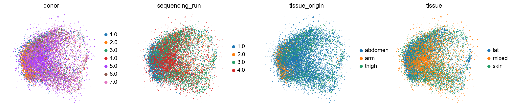
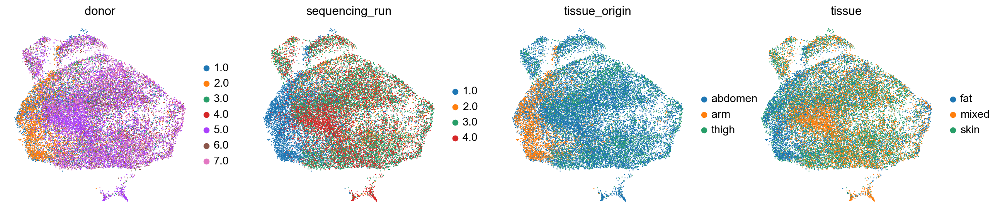
sc.pl.embedding(adata_hvgs, basis="logcounts.scaled.scanorama.pca.neighbors.umap", color=adata_hvgs.var.index.intersection(markers.gene_ID), norm=colors.LogNorm())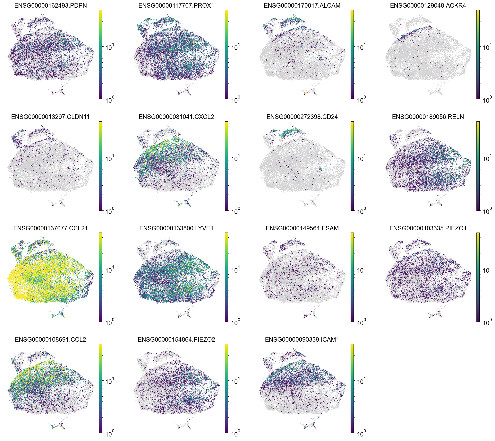
# harmony integration
# we're gonna use this one instead of scanorama
sc.external.pp.harmony_integrate(
adata_hvgs, basis="logcounts.scaled.pca", key="donor",
adjusted_basis="logcounts.scaled.pca.harmony", sigma=1. #hyperparameters: sigma.
)
adata_hvgs2023-07-17 15:13:32,899 - harmonypy - INFO - Iteration 1 of 10
2023-07-17 15:13:37,541 - harmonypy - INFO - Iteration 2 of 10
2023-07-17 15:13:40,047 - harmonypy - INFO - Iteration 3 of 10
2023-07-17 15:13:42,499 - harmonypy - INFO - Converged after 3 iterationsAnnData object with n_obs × n_vars = 21588 × 661
obs: 'Sample', 'Barcode', 'donor', 'tissue', 'tissue_origin', 'sequencing_run', 'sex', 'n_genes_by_counts', 'log1p_n_genes_by_counts', 'total_counts', 'log1p_total_counts', 'pct_counts_in_top_50_genes', 'pct_counts_in_top_100_genes', 'pct_counts_in_top_200_genes', 'pct_counts_in_top_500_genes'
var: 'ID', 'Symbol', 'Type', 'n_cells_by_counts', 'mean_counts', 'log1p_mean_counts', 'pct_dropout_by_counts', 'total_counts', 'log1p_total_counts', 'selected'
uns: 'X_name', 'donor_colors', 'sequencing_run_colors', 'tissue_origin_colors', 'tissue_colors', 'logcounts.scaled.pca.neighbors', 'logcounts.scaled.scanorama.pca.neighbors'
obsm: 'logcounts.scaled.pca', 'logcounts.scaled.pca.neighbors.umap', 'logcounts.scaled.scanorama.pca', 'logcounts.scaled.scanorama.pca.neighbors.umap', 'logcounts.scaled.pca.harmony'
layers: 'logcounts', 'logcounts.scaled', 'logcounts.scaled.scanorama'
obsp: 'logcounts.scaled.pca.neighbors_distances', 'logcounts.scaled.pca.neighbors_connectivities', 'logcounts.scaled.scanorama.pca.neighbors_distances', 'logcounts.scaled.scanorama.pca.neighbors_connectivities'sc.pp.neighbors(adata_hvgs, use_rep="logcounts.scaled.pca.harmony", n_pcs=100, n_neighbors=40, key_added="logcounts.scaled.pca.harmony.neighbors")
adata_hvgs.obsm["logcounts.scaled.pca.harmony.neighbors.umap"] = sc.tl.umap(adata_hvgs, neighbors_key="logcounts.scaled.pca.harmony.neighbors", copy=True).obsm["X_umap"]sc.pl.embedding(adata_hvgs, basis="logcounts.scaled.pca.harmony", color=["donor", "sequencing_run", "tissue_origin", "tissue"])
sc.pl.embedding(adata_hvgs, basis="logcounts.scaled.pca.harmony.neighbors.umap", color=["donor", "sequencing_run", "tissue_origin", "tissue"])/Users/daniele/miniconda3/envs/usefulenv/lib/python3.10/site-packages/scanpy/plotting/_tools/scatterplots.py:392: UserWarning: No data for colormapping provided via 'c'. Parameters 'cmap' will be ignored
cax = scatter(
/Users/daniele/miniconda3/envs/usefulenv/lib/python3.10/site-packages/scanpy/plotting/_tools/scatterplots.py:392: UserWarning: No data for colormapping provided via 'c'. Parameters 'cmap' will be ignored
cax = scatter(
/Users/daniele/miniconda3/envs/usefulenv/lib/python3.10/site-packages/scanpy/plotting/_tools/scatterplots.py:392: UserWarning: No data for colormapping provided via 'c'. Parameters 'cmap' will be ignored
cax = scatter(
/Users/daniele/miniconda3/envs/usefulenv/lib/python3.10/site-packages/scanpy/plotting/_tools/scatterplots.py:392: UserWarning: No data for colormapping provided via 'c'. Parameters 'cmap' will be ignored
cax = scatter(
/Users/daniele/miniconda3/envs/usefulenv/lib/python3.10/site-packages/scanpy/plotting/_tools/scatterplots.py:392: UserWarning: No data for colormapping provided via 'c'. Parameters 'cmap' will be ignored
cax = scatter(
/Users/daniele/miniconda3/envs/usefulenv/lib/python3.10/site-packages/scanpy/plotting/_tools/scatterplots.py:392: UserWarning: No data for colormapping provided via 'c'. Parameters 'cmap' will be ignored
cax = scatter(
/Users/daniele/miniconda3/envs/usefulenv/lib/python3.10/site-packages/scanpy/plotting/_tools/scatterplots.py:392: UserWarning: No data for colormapping provided via 'c'. Parameters 'cmap' will be ignored
cax = scatter(
/Users/daniele/miniconda3/envs/usefulenv/lib/python3.10/site-packages/scanpy/plotting/_tools/scatterplots.py:392: UserWarning: No data for colormapping provided via 'c'. Parameters 'cmap' will be ignored
cax = scatter(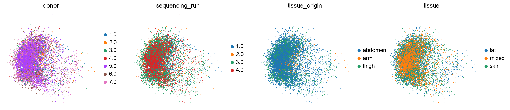
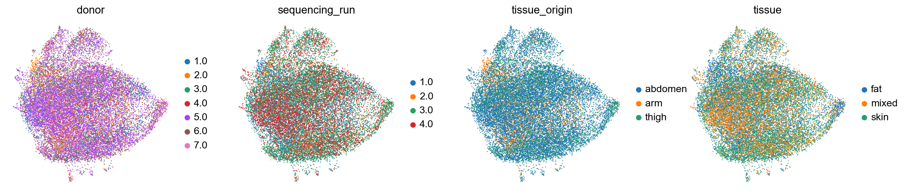
# laiden clustering at different resolutions on the scanorama integration layer
sc.tl.leiden(adata_hvgs, obsp="logcounts.scaled.scanorama.pca.neighbors_connectivities", resolution=.025, key_added="logcounts.scaled.scanorama.pca.neighbors_connectivities.leiden_0025res")
sc.tl.leiden(adata_hvgs, obsp="logcounts.scaled.scanorama.pca.neighbors_connectivities", resolution=.05, key_added="logcounts.scaled.scanorama.pca.neighbors_connectivities.leiden_005res")
sc.tl.leiden(adata_hvgs, obsp="logcounts.scaled.scanorama.pca.neighbors_connectivities", resolution=.1, key_added="logcounts.scaled.scanorama.pca.neighbors_connectivities.leiden_01res")
sc.tl.leiden(adata_hvgs, obsp="logcounts.scaled.scanorama.pca.neighbors_connectivities", resolution=.25, key_added="logcounts.scaled.scanorama.pca.neighbors_connectivities.leiden_025res")
sc.tl.leiden(adata_hvgs, obsp="logcounts.scaled.scanorama.pca.neighbors_connectivities", resolution=.5, key_added="logcounts.scaled.scanorama.pca.neighbors_connectivities.leiden_05res")
sc.tl.leiden(adata_hvgs, obsp="logcounts.scaled.scanorama.pca.neighbors_connectivities", resolution=1, key_added="logcounts.scaled.scanorama.pca.neighbors_connectivities.leiden_1res")
adata_hvgs.obs| Sample | Barcode | donor | tissue | tissue_origin | sequencing_run | sex | n_genes_by_counts | log1p_n_genes_by_counts | total_counts | ... | pct_counts_in_top_50_genes | pct_counts_in_top_100_genes | pct_counts_in_top_200_genes | pct_counts_in_top_500_genes | logcounts.scaled.scanorama.pca.neighbors_connectivities.leiden_0025res | logcounts.scaled.scanorama.pca.neighbors_connectivities.leiden_005res | logcounts.scaled.scanorama.pca.neighbors_connectivities.leiden_01res | logcounts.scaled.scanorama.pca.neighbors_connectivities.leiden_025res | logcounts.scaled.scanorama.pca.neighbors_connectivities.leiden_05res | logcounts.scaled.scanorama.pca.neighbors_connectivities.leiden_1res | |
|---|---|---|---|---|---|---|---|---|---|---|---|---|---|---|---|---|---|---|---|---|---|
| donor1_fat.AAAGAACCACATACGT-1 | donor1_fat | AAAGAACCACATACGT-1 | 1.0 | fat | abdomen | 1.0 | F | 252 | 5.533389 | 1317.0 | ... | 61.655277 | 81.624905 | 96.051632 | 100.0 | 0 | 0 | 1 | 1 | 2 | 3 |
| donor1_fat.AAAGGTAGTCCGGTCA-1 | donor1_fat | AAAGGTAGTCCGGTCA-1 | 1.0 | fat | abdomen | 1.0 | F | 139 | 4.941642 | 1479.0 | ... | 80.459770 | 97.363083 | 100.000000 | 100.0 | 0 | 0 | 0 | 3 | 3 | 5 |
| donor1_fat.AAAGGTATCTCTCTTC-1 | donor1_fat | AAAGGTATCTCTCTTC-1 | 1.0 | fat | abdomen | 1.0 | F | 196 | 5.283204 | 1806.0 | ... | 72.369878 | 91.251384 | 100.000000 | 100.0 | 0 | 0 | 0 | 0 | 3 | 5 |
| donor1_fat.AACCACACAGTGGCTC-1 | donor1_fat | AACCACACAGTGGCTC-1 | 1.0 | fat | abdomen | 1.0 | F | 254 | 5.541264 | 3110.0 | ... | 66.495177 | 88.938907 | 98.263666 | 100.0 | 0 | 0 | 0 | 3 | 4 | 1 |
| donor1_fat.AACGGGATCTGCTGAA-1 | donor1_fat | AACGGGATCTGCTGAA-1 | 1.0 | fat | abdomen | 1.0 | F | 171 | 5.147494 | 1448.0 | ... | 73.273481 | 93.784530 | 100.000000 | 100.0 | 0 | 0 | 0 | 3 | 4 | 1 |
| ... | ... | ... | ... | ... | ... | ... | ... | ... | ... | ... | ... | ... | ... | ... | ... | ... | ... | ... | ... | ... | ... |
| donor5_recovery.TTTGGTTTCGACCAAT-1 | donor5_recovery | TTTGGTTTCGACCAAT-1 | 5.0 | mixed | abdomen | 4.0 | ? | 163 | 5.099866 | 618.0 | ... | 67.475728 | 89.320388 | 100.000000 | 100.0 | 0 | 0 | 0 | 0 | 3 | 7 |
| donor5_recovery.TTTGTTGGTCCTACGG-1 | donor5_recovery | TTTGTTGGTCCTACGG-1 | 5.0 | mixed | abdomen | 4.0 | ? | 143 | 4.969813 | 305.0 | ... | 63.934426 | 85.901639 | 100.000000 | 100.0 | 0 | 0 | 0 | 0 | 0 | 0 |
| donor5_recovery.TTTGTTGGTCGCAGTC-1 | donor5_recovery | TTTGTTGGTCGCAGTC-1 | 5.0 | mixed | abdomen | 4.0 | ? | 207 | 5.337538 | 471.0 | ... | 53.715499 | 76.433121 | 98.513800 | 100.0 | 0 | 0 | 1 | 1 | 2 | 8 |
| donor5_recovery.TTTGTTGGTGGCGTAA-1 | donor5_recovery | TTTGTTGGTGGCGTAA-1 | 5.0 | mixed | abdomen | 4.0 | ? | 142 | 4.962845 | 813.0 | ... | 77.121771 | 94.833948 | 100.000000 | 100.0 | 0 | 0 | 0 | 4 | 8 | 12 |
| donor5_recovery.TTTGTTGTCGGCATTA-1 | donor5_recovery | TTTGTTGTCGGCATTA-1 | 5.0 | mixed | abdomen | 4.0 | ? | 216 | 5.379897 | 763.0 | ... | 57.798165 | 80.471822 | 97.903014 | 100.0 | 0 | 0 | 2 | 4 | 6 | 10 |
21588 rows × 21 columns
# number of clusters for each resolution
#we're interested in selecting at least 10 clusters
adata_hvgs.obs.loc[:,adata_hvgs.obs.columns.str.match("logcounts\.scaled\.scanorama\.pca\.neighbors_connectivities\.leiden_[0-9]+res$")].nunique()logcounts.scaled.scanorama.pca.neighbors_connectivities.leiden_0025res 1
logcounts.scaled.scanorama.pca.neighbors_connectivities.leiden_005res 1
logcounts.scaled.scanorama.pca.neighbors_connectivities.leiden_01res 4
logcounts.scaled.scanorama.pca.neighbors_connectivities.leiden_025res 6
logcounts.scaled.scanorama.pca.neighbors_connectivities.leiden_05res 10
logcounts.scaled.scanorama.pca.neighbors_connectivities.leiden_1res 16
dtype: int64sc.pl.heatmap(
adata_hvgs, var_names=markers.gene_ID.unique(),
groupby='logcounts.scaled.scanorama.pca.neighbors_connectivities.leiden_05res',
swap_axes=True, layer="logcounts", standard_scale="var"
)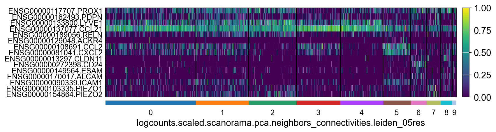
sc.pl.embedding(adata_hvgs, basis="logcounts.scaled.scanorama.pca.neighbors.umap", color="logcounts.scaled.scanorama.pca.neighbors_connectivities.leiden_05res")/Users/daniele/miniconda3/envs/usefulenv/lib/python3.10/site-packages/scanpy/plotting/_tools/scatterplots.py:392: UserWarning: No data for colormapping provided via 'c'. Parameters 'cmap' will be ignored
cax = scatter(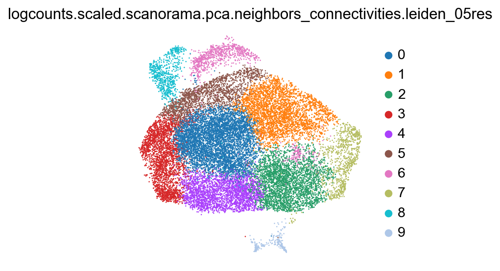
# laiden clustering at different resolutions on the harmony integration layer
sc.tl.leiden(adata_hvgs, obsp="logcounts.scaled.pca.harmony.neighbors_connectivities", resolution=.025, key_added="logcounts.scaled.pca.harmony.neighbors_connectivities.leiden_0025res")
sc.tl.leiden(adata_hvgs, obsp="logcounts.scaled.pca.harmony.neighbors_connectivities", resolution=.05, key_added="logcounts.scaled.pca.harmony.neighbors_connectivities.leiden_005res")
sc.tl.leiden(adata_hvgs, obsp="logcounts.scaled.pca.harmony.neighbors_connectivities", resolution=.1, key_added="logcounts.scaled.pca.harmony.neighbors_connectivities.leiden_01res")
sc.tl.leiden(adata_hvgs, obsp="logcounts.scaled.pca.harmony.neighbors_connectivities", resolution=.15, key_added="logcounts.scaled.pca.harmony.neighbors_connectivities.leiden_015res")
sc.tl.leiden(adata_hvgs, obsp="logcounts.scaled.pca.harmony.neighbors_connectivities", resolution=.2, key_added="logcounts.scaled.pca.harmony.neighbors_connectivities.leiden_02res")
sc.tl.leiden(adata_hvgs, obsp="logcounts.scaled.pca.harmony.neighbors_connectivities", resolution=.25, key_added="logcounts.scaled.pca.harmony.neighbors_connectivities.leiden_025res")
sc.tl.leiden(adata_hvgs, obsp="logcounts.scaled.pca.harmony.neighbors_connectivities", resolution=.3, key_added="logcounts.scaled.pca.harmony.neighbors_connectivities.leiden_03res")
sc.tl.leiden(adata_hvgs, obsp="logcounts.scaled.pca.harmony.neighbors_connectivities", resolution=.4, key_added="logcounts.scaled.pca.harmony.neighbors_connectivities.leiden_04res")
sc.tl.leiden(adata_hvgs, obsp="logcounts.scaled.pca.harmony.neighbors_connectivities", resolution=.5, key_added="logcounts.scaled.pca.harmony.neighbors_connectivities.leiden_05res")
sc.tl.leiden(adata_hvgs, obsp="logcounts.scaled.pca.harmony.neighbors_connectivities", resolution=1, key_added="logcounts.scaled.pca.harmony.neighbors_connectivities.leiden_1res")
adata_hvgs.obs| Sample | Barcode | donor | tissue | tissue_origin | sequencing_run | sex | n_genes_by_counts | log1p_n_genes_by_counts | total_counts | ... | logcounts.scaled.pca.harmony.neighbors_connectivities.leiden_0025res | logcounts.scaled.pca.harmony.neighbors_connectivities.leiden_005res | logcounts.scaled.pca.harmony.neighbors_connectivities.leiden_01res | logcounts.scaled.pca.harmony.neighbors_connectivities.leiden_015res | logcounts.scaled.pca.harmony.neighbors_connectivities.leiden_02res | logcounts.scaled.pca.harmony.neighbors_connectivities.leiden_025res | logcounts.scaled.pca.harmony.neighbors_connectivities.leiden_03res | logcounts.scaled.pca.harmony.neighbors_connectivities.leiden_04res | logcounts.scaled.pca.harmony.neighbors_connectivities.leiden_05res | logcounts.scaled.pca.harmony.neighbors_connectivities.leiden_1res | |
|---|---|---|---|---|---|---|---|---|---|---|---|---|---|---|---|---|---|---|---|---|---|
| donor1_fat.AAAGAACCACATACGT-1 | donor1_fat | AAAGAACCACATACGT-1 | 1.0 | fat | abdomen | 1.0 | F | 252 | 5.533389 | 1317.0 | ... | 0 | 0 | 0 | 0 | 1 | 1 | 1 | 1 | 1 | 7 |
| donor1_fat.AAAGGTAGTCCGGTCA-1 | donor1_fat | AAAGGTAGTCCGGTCA-1 | 1.0 | fat | abdomen | 1.0 | F | 139 | 4.941642 | 1479.0 | ... | 0 | 0 | 0 | 0 | 1 | 1 | 1 | 1 | 1 | 1 |
| donor1_fat.AAAGGTATCTCTCTTC-1 | donor1_fat | AAAGGTATCTCTCTTC-1 | 1.0 | fat | abdomen | 1.0 | F | 196 | 5.283204 | 1806.0 | ... | 0 | 0 | 0 | 0 | 0 | 0 | 0 | 0 | 0 | 0 |
| donor1_fat.AACCACACAGTGGCTC-1 | donor1_fat | AACCACACAGTGGCTC-1 | 1.0 | fat | abdomen | 1.0 | F | 254 | 5.541264 | 3110.0 | ... | 0 | 0 | 0 | 0 | 1 | 1 | 1 | 1 | 1 | 2 |
| donor1_fat.AACGGGATCTGCTGAA-1 | donor1_fat | AACGGGATCTGCTGAA-1 | 1.0 | fat | abdomen | 1.0 | F | 171 | 5.147494 | 1448.0 | ... | 0 | 0 | 0 | 0 | 1 | 1 | 1 | 1 | 1 | 1 |
| ... | ... | ... | ... | ... | ... | ... | ... | ... | ... | ... | ... | ... | ... | ... | ... | ... | ... | ... | ... | ... | ... |
| donor5_recovery.TTTGGTTTCGACCAAT-1 | donor5_recovery | TTTGGTTTCGACCAAT-1 | 5.0 | mixed | abdomen | 4.0 | ? | 163 | 5.099866 | 618.0 | ... | 0 | 0 | 0 | 0 | 0 | 0 | 0 | 0 | 0 | 0 |
| donor5_recovery.TTTGTTGGTCCTACGG-1 | donor5_recovery | TTTGTTGGTCCTACGG-1 | 5.0 | mixed | abdomen | 4.0 | ? | 143 | 4.969813 | 305.0 | ... | 0 | 0 | 0 | 0 | 0 | 0 | 0 | 1 | 0 | 1 |
| donor5_recovery.TTTGTTGGTCGCAGTC-1 | donor5_recovery | TTTGTTGGTCGCAGTC-1 | 5.0 | mixed | abdomen | 4.0 | ? | 207 | 5.337538 | 471.0 | ... | 0 | 0 | 0 | 0 | 1 | 4 | 2 | 4 | 4 | 7 |
| donor5_recovery.TTTGTTGGTGGCGTAA-1 | donor5_recovery | TTTGTTGGTGGCGTAA-1 | 5.0 | mixed | abdomen | 4.0 | ? | 142 | 4.962845 | 813.0 | ... | 0 | 0 | 0 | 0 | 2 | 3 | 3 | 3 | 3 | 9 |
| donor5_recovery.TTTGTTGTCGGCATTA-1 | donor5_recovery | TTTGTTGTCGGCATTA-1 | 5.0 | mixed | abdomen | 4.0 | ? | 216 | 5.379897 | 763.0 | ... | 0 | 0 | 0 | 0 | 2 | 3 | 3 | 3 | 3 | 8 |
21588 rows × 31 columns
# number of clusters for each resolution
#we're interested in selecting at least 10 clusters
adata_hvgs.obs.loc[:,adata_hvgs.obs.columns.str.match("logcounts\.scaled\.pca\.harmony\.neighbors_connectivities\.leiden_[0-9]+res$")].nunique()logcounts.scaled.pca.harmony.neighbors_connectivities.leiden_0025res 1
logcounts.scaled.pca.harmony.neighbors_connectivities.leiden_005res 1
logcounts.scaled.pca.harmony.neighbors_connectivities.leiden_01res 1
logcounts.scaled.pca.harmony.neighbors_connectivities.leiden_015res 1
logcounts.scaled.pca.harmony.neighbors_connectivities.leiden_02res 3
logcounts.scaled.pca.harmony.neighbors_connectivities.leiden_025res 5
logcounts.scaled.pca.harmony.neighbors_connectivities.leiden_03res 5
logcounts.scaled.pca.harmony.neighbors_connectivities.leiden_04res 9
logcounts.scaled.pca.harmony.neighbors_connectivities.leiden_05res 11
logcounts.scaled.pca.harmony.neighbors_connectivities.leiden_1res 20
dtype: int64sc.pl.heatmap(
adata_hvgs.copy(), var_names=markers.gene_ID.unique(), dendrogram=True,
groupby='logcounts.scaled.pca.harmony.neighbors_connectivities.leiden_05res',
swap_axes=True, layer="logcounts", standard_scale="var", figsize=(20,5)
)WARNING: dendrogram data not found (using key=dendrogram_logcounts.scaled.pca.harmony.neighbors_connectivities.leiden_05res). Running `sc.tl.dendrogram` with default parameters. For fine tuning it is recommended to run `sc.tl.dendrogram` independently.
WARNING: You’re trying to run this on 661 dimensions of `.X`, if you really want this, set `use_rep='X'`.
Falling back to preprocessing with `sc.pp.pca` and default params.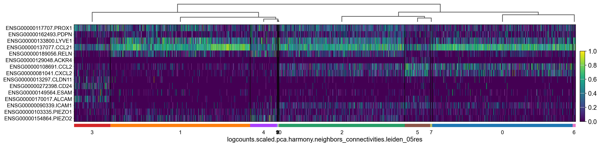
sc.pl.embedding(adata_hvgs, basis="logcounts.scaled.pca.harmony.neighbors.umap", color=adata_hvgs.var.index.intersection(markers.gene_ID), norm=colors.LogNorm(vmin=1))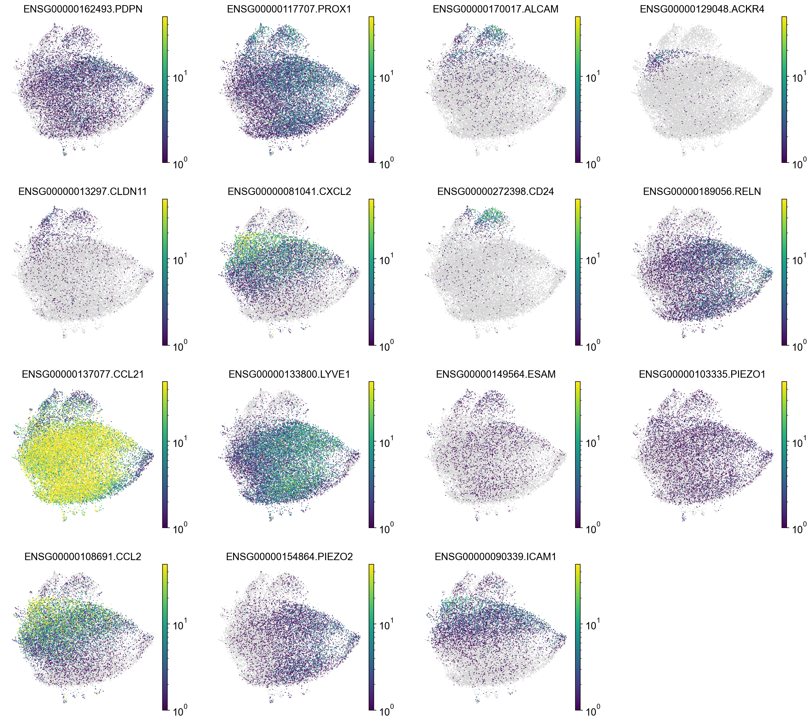
sc.pl.embedding(adata_hvgs, basis="logcounts.scaled.pca.harmony.neighbors.umap", color="logcounts.scaled.pca.harmony.neighbors_connectivities.leiden_05res")/Users/daniele/miniconda3/envs/usefulenv/lib/python3.10/site-packages/scanpy/plotting/_tools/scatterplots.py:392: UserWarning: No data for colormapping provided via 'c'. Parameters 'cmap' will be ignored
cax = scatter(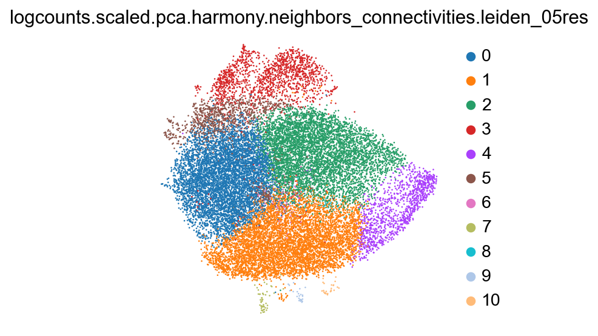
#save the adata object
adata_hvgs.write_h5ad("../output/1.1-sce-after-contamination-removal-integration-clustering.h5ad")